if (!require(pacman)) {
install.packages("pacman")
}
pacman::p_load(
tidyverse,
readxl,
tidyr,
janitor,
here,
gt,
flextable,
gtsummary,
gtExtras
)Analyse des conditions socioéconomiques et accès aux services essentiels des ménages de la commune de Tchaoudjo 2
1 - Introduction générale
Dans un contexte de décentralisation où les communes assument des responsabilités croissantes en matière de développement local et de services de proximité, la qualité des décisions publiques dépend largement de la connaissance du territoire et des populations qui y vivent. La planification du développement constitue ainsi un levier essentiel pour permettre aux collectivités territoriales d’organiser leur action, de hiérarchiser les besoins et d’orienter efficacement les ressources disponibles vers l’amélioration des conditions de vie des populations. Planifier consiste à disposer d’un diagnostic suffisamment précis permettant de comprendre les dynamiques démographiques, sociales, économiques et territoriales qui déterminent les besoins des populations.
La connaissance des caractéristiques démographiques et socioéconomiques des ménages constitue un préalable à une planification locale fondée sur des données probantes. Des informations fiables sur la composition des ménages, le niveau d’éducation, l’emploi, les activités économiques, les sources de revenus, les conditions d’habitat, les facteurs de vulnérabilité ou encore l’accès aux services essentiels permettent aux autorités locales de mieux identifier les besoins, de cibler les populations et les territoires les plus vulnérables et d’effectuer des arbitrages dans l’allocation des ressources. Elles permettent également de suivre les transformations du territoire et d’apprécier la situation des différentes zones de la commune et celle de la commune par rapport à d’autres territoires ou aux tendances observées à l’échelle nationale. La disponibilité de données désagrégées à l’échelle communale représente ainsi un enjeu important pour une gouvernance locale davantage orientée vers les résultats.
C’est dans cette perspective que, dans le cadre du processus d’élaboration du Plan de développement communal (PDC) de Tchaoudjo 2, une enquête auprès des ménages a été réalisée afin de mieux documenter les caractéristiques et les conditions de vie de vie des populations. Les données recueillies portent notamment sur les caractéristiques sociodémographiques des ménages, l’éducation, la santé, l’emploi et les activités économiques, les revenus et moyens d’existence, l’habitat, l’accès à l’eau, l’assainissement, l’énergie, le transport ainsi que certaines caractéristiques de leur environnement. Au-delà de leur utilisation pour l’établissement du diagnostic communal, ces données offrent l’opportunité d’approfondir l’analyse des relations entre les conditions socioéconomiques des ménages et leur capacité à accéder aux services sociaux essentiels.
En effet, l’existence d’une école, d’une formation sanitaire ou d’un autre équipement collectif sur un territoire ne garantit pas nécessairement son accessibilité effective à l’ensemble de la population. Un ménage peut, par exemple, renoncer ou recourir tardivement aux soins de santé en raison de ressources financières insuffisantes, de l’éloignement d’une formation sanitaire ou des coûts de transport. De même, la fréquentation scolaire peut être affectée par les ressources du ménage, la distance séparant le domicile de l’établissement, les caractéristiques du chef de ménage ou encore la zone de résidence. Il importe dès lors de dépasser la simple mesure du niveau d’accès aux services pour chercher à comprendre les facteurs susceptibles d’expliquer les différences observées entre les ménages.
La problématique centrale de ce mémoire consiste ainsi à analyser dans quelle mesure les conditions socioéconomiques et sociodémographiques des ménages influencent leur accès aux services sociaux de base dans la commune de Tchaoudjo 2. Les ménages accèdent-ils moins aux soins principalement en raison de contraintes financières ou du fait de l’éloignement des structures sanitaires ? Les contraintes économiques expliquent-elles davantage les difficultés d’accès aux services que d’autres caractéristiques telles que le niveau d’éducation du chef de ménage, la composition du ménage ou la zone de résidence ? Plus généralement, dans quelle mesure les caractéristiques socioéconomiques des ménages de Tchaoudjo 2 sont-elles associées à leur niveau d’accès aux services essentiels ? L’analyse de ces différentes dimensions permettra de mieux comprendre les mécanismes par lesquels les contraintes socioéconomiques et territoriales peuvent se traduire par des limitations d’accès aux services sociaux de base.
Pour répondre à cette problématique, notre étude est structurée en trois chapitres. Le premier chapitre présente le cadre conceptuel et méthodologique de l’étude, notamment les concepts, les données, les variables et les méthodes d’analyse retenues. Le deuxième chapitre est consacré à la revue de la littérature théorique et empirique sur les relations entre caractéristiques socioéconomiques des ménages et accès aux services sociaux de base. Enfin, le troisième chapitre analyse, à partir des données de l’enquête auprès des ménages, l’effet des caractéristiques socioéconomiques, sociodémographiques et territoriales sur l’accès aux services sociaux de base dans la commune de Tchaoudjo 2, avant d’en dégager les principaux enseignements pour la planification du développement communal.
2 - Cadre conceptuel
2.1 - Objectifs du mémoire
2.1.1 - Objectif général
Analyser les conditions socioéconomiques des ménages de la commune de Tchaoudjo 2 et les facteurs associés à leur accès aux services essentiels, afin d’en dégager les principaux enjeux pour le développement communal.
2.1.2 - Objectifs spécifiques
- Caractériser le profil démographique et socioéconomique des ménages de Tchaoudjo 2 ;
- Analyser les différences d’accès aux services essentiels selon les caractéristiques socioéconomiques et la localisation géographique des ménages ;
- Formuler des recommandations susceptibles d’améliorer le ciblage des interventions communales.
2.2 - Problématique
L’amélioration des conditions de vie des populations constitue l’une des finalités du développement local. Elle dépend à la fois des possibilités offertes aux ménages d’exercer des activités économiques et de générer des revenus, mais aussi de leur capacité à accéder à des services essentiels tels que l’eau potable, l’assainissement, l’électricité, l’éducation, la santé et les infrastructures de mobilité. Or, l’existence d’une infrastructure ou d’un service dans une commune ne signifie pas nécessairement que l’ensemble des ménages y accède dans des conditions similaires. L’accès peut être influencé par la localisation géographique, les caractéristiques économiques du ménage, les distances, les infrastructures disponibles, les coûts ou encore certaines caractéristiques sociodémographiques.
Dans le cas de Tchaoudjo 2, les premiers résultats du diagnostic communal montrent simultanément des progrès dans certains domaines et la persistance de contraintes. À titre d’exemple, l’enquête fait apparaître une combinaison importante entre raccordement au réseau électrique et recours aux solutions solaires, tandis que les conditions d’accès à l’eau potable et à d’autres services présentent des situations variables selon les territoires. Les analyses préliminaires réalisées montrent également des associations statistiquement significatives entre certaines variables d’accès aux services et la zone de résidence. La problématique peut donc être formulée autour de la question suivante : Dans quelle mesure les caractéristiques socioéconomiques et territoriales des ménages de Tchaoudjo 2 sont-elles associées à leur niveau d’accès aux services essentiels ?
2.3 - Questions de recherche
Quelles sont les conditions socioéconomiques des ménages de Tchaoudjo 2 et quels facteurs sont associés à leur accès aux services essentiels ? Les questions spécifiques suivantes sont posées :
- Quelles sont les principales caractéristiques démographiques et socioéconomiques des ménages de Tchaoudjo 2 ?
- Existe-t-il des différences significatives dans l’accès aux services essentiels selon les caractéristiques socioéconomiques des ménages et leur zone de résidence ?
- Quels enseignements ces résultats peuvent-ils fournir pour améliorer le ciblage des interventions de développement communal ?
2.4 - Hypothèses de recherche
Hypothèse 1 : Conditions socioéconomiques Les ménages de Tchaoudjo 2 présentent des conditions socioéconomiques différenciées selon leurs caractéristiques démographiques, leurs activités économiques et leur localisation géographique.
Hypothèse 2 : Relation entre situation socioéconomique et services essentiels Les caractéristiques socioéconomiques des ménages sont significativement associées à leur niveau d’accès aux services essentiels.
2.5 - Résultats attendus
À l’issue de cette étude, les principaux résultats attendus sont :
• Le profil socioéconomique et sociodémographique des ménages de la commune de Tchaoudjo 2 est établi à partir des données de l’enquête ménage ;
• Les relations entre les caractéristiques sociodémographiques des ménages et leur accès aux services sociaux de base sont analysés, notamment en fonction du niveau d’éducation du chef de ménage, de la taille et de la composition du ménage ;
• Des recommandations fondées sur les résultats de l’étude sont formulées afin d’améliorer le ciblage des interventions, la priorisation des investissements et la planification des services sociaux de base dans la commune de Tchaoudjo 2.
2.6 - Définitions des principaux concepts
2.6.1 - Le ménage
Le ménage est l’unité fondamentale d’observation de l’étude. Le concept de « ménage » est fondé sur les dispositions prises par les personnes individuellement ou d’une façon collective afin de pourvoir à leurs besoins vitaux. On distingue deux sortes de ménages : le ménage ordinaire et le ménage collectif.
2.6.1.1 - Le ménage ordinaire
Le ménage ordinaire est constitué par une personne ou un groupe de personnes apparentées ou non, vivant dans une même unité d’habitation, prenant le plus souvent leurs repas en commun, subvenant ensemble à leurs autres besoins essentiels et reconnaissant l’autorité d’une personne de référence appelée Chef de Ménage (CM). Une concession peut donc abriter plusieurs ménages ordinaires . Le chef de la concession n’est pas le chef de tous les ménages de la concession mais uniquement le chef du ménage auquel il appartient. Quelques cas spécifiques de ménages ordinaires peuvent être :
- un homme avec son épouse ou ses épouses avec ou sans enfant(s) ;
- un homme avec son épouse ou ses épouses avec leurs enfants non mariés et leurs parents ;
- un homme avec son ou ses épouse(s) vivant avec leurs enfants mariés partageant le même repas ;
- un homme ou une femme vivant avec ses enfants ;
- un homme ou une femme vivant seul.
Il faudra également différencier un ménage et une famille. Les membres d’un ménage ne sont pas nécessairement apparentés alors que tel est le cas pour les membres d’une famille. De même, les membres d’une famille peuvent ne pas vivre ensemble alors que c’est le cas pour les membres d’un ménage.
2.6.1.2 - Le ménage collectif
Un ménage collectif est constitué par un groupe de personnes, sans lien de parenté a priori, qui vivent ensemble au sein d’une même institution pour des raisons de santé, d’études, de religion, de travail, de voyage, de privation de liberté et autres. C’est l’institution qui règlemente les conditions de leur coexistence, compte tenu de son statut et de ses propres objectifs. Entrent dans ce cadre les institutions suivantes :
- Les casernes ;
- Les communautés de religieux ;
- Les orphelinats ;
- Les centres des personnes vivant avec un handicap ;
- Les prisons/centres de détention /établissements pénitenciers ;
- Les hôtels ;
- Les hôpitaux ;
- Les internats scolaires/universitaires ;
- Les cités scolaires/universitaires ;
- Les sans-abris ;
- Les villages des accompagnants : espace aménagé à l’intérieur d’un hôpital pour héberger temporairement ceux qui accompagnent les hospitalisés.
2.6.2 - Conditions socioéconomiques
Ensemble des caractéristiques relatives à la situation économique et sociale des ménages : activité, emploi, revenus, éducation, habitat, moyens de production, patrimoine, etc.
2.6.3 - Services essentiels
Ensemble des services contribuant directement aux besoins fondamentaux et aux conditions de vie : eau, assainissement, énergie, santé, éducation, mobilité, etc.
2.6.4 - Accès
L’accès à un service essentiel ne se limite pas seulement à la présence d’une infrastructure ou à un service public de base. L’accès peut faire référence à la disponibilité du service, son accessibilité géographique et économique, son utilisation effective, la qualité et/ou la permanence du service.
3 - Cadre méthodologique
3.1 - Méthode d’analyse
Pour atteindre les objectifs assignés à notre recherche, une méthodologie combinant la recherche documentaire et l’analyse de données d’enquêtes a été privilégiée. L’analyse se fera donc en deux étapes :
La première étape consiste à faire une analyse documentaire ou revue de la littérature sur le sujet, afin de faire ressortir les travaux déjà effectués dans le domaine et d’en étudier les différentes positions et théories proposées par les divers auteurs. Cette recherche documentaire a été menée via internet et les documents collectés auprès des acteurs et autorités communales sur le terrain.
La deuxième étape a été une étude qui repose sur une approche quantitative fondée sur une enquête auprès des ménages réalisée dans les différentes localités de la commune de Tchaoudjo 2. Ce choix méthodologique permet de recueillir directement auprès des populations des données détaillées sur leurs caractéristiques sociodémographiques, leurs activités et conditions socioéconomiques ainsi que leur niveau d’accès aux services sociaux de base, notamment l’eau potable, l’hygiène, l’assainissement, l’éducation et la santé. Par rapport à une simple revue documentaire, l’enquête ménage présente l’avantage de produire des données primaires, récentes et désagrégées à l’échelle locale, permettant de mieux rendre compte des réalités vécues par les ménages et des différences pouvant exister entre catégories de population et zones géographiques. Elle permet également de mettre en relation plusieurs caractéristiques des ménages afin d’analyser statistiquement les facteurs économiques, sociodémographiques et territoriaux associés aux difficultés d’accès aux services essentiels.
Cette approche présente néanmoins certaines limites. Les informations recueillies reposent en partie sur les déclarations des personnes enquêtées et peuvent ainsi être affectées par des erreurs de mémoire, des difficultés d’estimation notamment pour les revenus et certaines dépenses ou des biais de déclaration. Par ailleurs, une enquête réalisée à un moment donné fournit essentiellement une photographie de la situation et permet difficilement d’établir, à elle seule, des relations de causalité entre les caractéristiques socioéconomiques et l’accès aux services. Ces limites seront prises en compte dans l’interprétation des résultats et, lorsque cela est pertinent, les données de l’enquête seront confrontées aux informations issues des sources documentaires et administratives disponibles.
L’analyse a été menée à plusieurs niveaux, à savoir une analyse statistique univariée, bivariée et multivariée. Pour cela, nous utiliserons les outils comme les statistiques descriptives, test de Khi-2, la comparaison de moyenne, l’ANOVA, en fonction des types de variables et de l’objectif recherché par l’analyse. Une méthode économétrique relative aux variables qualitatives est également envisagée pour l’analyse.
Pour le traitement des données, nous avons utilisé le logiciel R et l’IDE Positron pour la manipulation des données, la réalisation des graphiques, les tests statistiques et l’analyse économétrique au besoin. Le choix de R s’est imposé par sa simplicité, la reproductibilité, l’existence de nombreux packages pour tout type d’analyse notamment le Tidyverse et la grande disponibilité de ressources en ligne sur cet outil.
3.2 - Population d’étude
La population cible est constituée des ménages résidant dans la commune de Tchaoudjo 2. Dans le cadre de notre étude, l’unité statistique est donc le ménage. Le chef de ménage constitue le principal répondant de l’enquête, en raison de sa connaissance supposée des caractéristiques générales du ménage, de ses activités économiques, de ses ressources, de ses conditions de vie et de son accès aux différents services essentiels.
Les informations recueillies auprès du chef de ménage ont permis ainsi de caractériser l’ensemble du ménage, sans pour autant assimiler le chef de ménage à l’unité statistique. Certaines caractéristiques propres au chef de ménage, telles que le sexe, l’âge, le niveau d’instruction ou l’activité professionnelle, sont également être utilisées comme variables explicatives afin d’analyser leur association avec les conditions socioéconomiques et l’accès du ménage aux services sociaux de base.
3.3 - Échantillonnage
Dans le cadre de l’enquête auprès des ménages, un échantillonnage stratifié géographique a été retenu afin de garantir une couverture représentative des différentes parties du territoire communal. La commune, dont la population totale est de 24 891 habitants selon le Recensement Général de la Population et de l’Habitat (RGPH 5, 2022), a été subdivisée en quatre strates géographiques : Nord-Est, Nord-Ouest, Sud-Est et Sud-Ouest. Sur la base d’une hypothèse de 5 personnes par ménage en moyenne, la population communale correspond à environ 4 978 ménages.
En tenant compte de la proportion de population des localités selon le RGPH 5, la répartition des ménages entre les quatre strates est la suivante : 1 039 ménages dans la zone Nord-Est (20,9 %), 877 ménages dans la zone Nord-Ouest (17,6 %), 2 431 ménages dans la zone Sud-Est (48,8 %) et 631 ménages dans la zone Sud-Ouest (12,7 %). Cette stratification permet de tenir compte de la répartition spatiale de la population et d’assurer la présence de chacune des zones dans l’échantillon.
La taille minimale de l’échantillon a ensuite été déterminée indépendamment pour chacune des quatre strates, à partir de la formule de Dagnelie pour l’estimation d’une proportion dans une population finie. Cette approche permet d’adapter la taille de l’échantillon à la population de chaque zone, plutôt que de calculer un seul échantillon pour l’ensemble de la commune et de le répartir mécaniquement entre les zones. La taille finale de l’échantillon communal correspond à la somme des tailles minimales obtenues pour les quatre strates.
La sélection des ménages enquêtés est ensuite effectuée à l’intérieur de chaque strate, selon une procédure de tirage définie pour assurer une sélection aussi objective et représentative que possible des ménages. Les enquêteurs sélectionnent les ménages selon un itinéraire en sautant un ménage sur deux. Ainsi, chaque zone géographique constitue une strate d’échantillonnage indépendante, tandis que les ménages constituent les unités statistiques directement enquêtées.
La taille minimum de l’échantillon (n) dans chaque zone est obtenue en utilisant l’approximation normale de la distribution binomiale de Dagnélie suivant la formule :
\[\frac{z^2\times p(1-p)\times N} {z^2\times p(1-p) + (N-1) \times y^2}\] Avec : n : taille de l’échantillon ; N : nombre de ménage ; p : proportion de personnes disposée à répondre aux questions. p n’étant pas vraiment connue, sa valeur est fixée dans le cadre de cette étude à 0,5 afin d’avoir un grand nombre d’échantillons conformément aux règles statistiques ; y : Marge d’erreur ; z : la valeur associée à l’intervalle de confiance d’échantillonnage.
Avec les valeurs de : p = 0,5 ; y = 0,05 ; z à 95% = 1,96 ; Taux estimé de non réponse = 0,1 ; N = 1039 (Nord-Est), 877 (Nord-Ouest), 2431(Sud-Est) et 631(Sud-Ouest).
La Table 1 présente l’échantillon minimum représentatif pour chaque zone d’enquête et le nombre de ménages à enquêter prévus pour chaque zonelors de la collecte des données sur le terrain.
| Zone | Minimum | Prévu |
|---|---|---|
| Nord-Est | 192 | 312 |
| Nord-Ouest | 187 | 298 |
| Sud-Est | 210 | 369 |
| Sud-Ouest | 266 | 313 |
| Total | 855 | 1292 |
3.4 - Outils de collecte de données
Pour la collecte des données, nous avons utilisé l’outils Kobotoolbox et l’application mobile KoboCollect sur Android. Ces outils ont l’avantage d’être gratuit et open sources. Aussi, le mode hors ligne disponible est idéal pour le terrain ainsi que la prise en charge de la géolocalisation et du multimédia (image, vidéo, audio). La plateforme Kobotoolbox a permis d’élaborer le questionnaire, de paramétrer les sauts conditionnels, la sélection en cascade et les critères de validation. Ces applications présentent aussi l’avantage de géoréférencer les unités enquêtées, de suivre l’évolution des agents de collecte sur le terrain, de disposer des données en temps réel et de faciliter les contrôles des données à distance.
3.5 - Le questionnaire d’enquête et le dictionnaire de données
Le questionnaire, conçu et administré à l’aide de KoboToolbox, regroupe les variables d’intérêt de l’étude en douze sections thématiques complémentaires, couvrant les principales dimensions démographiques, socioéconomiques, environnementales et d’accès aux services essentiels des ménages. Chaque section vise à recueillir des informations spécifiques permettant de caractériser les conditions de vie des ménages et d’identifier les disparités territoriales ainsi que les principaux besoins de la population.
- Section 1 – Identification et localisation : permet d’identifier le ménage enquêté et de renseigner sa localisation géographique et administrative afin de faciliter la désagrégation spatiale des résultats.
- Section 2 – Accès à l’eau : renseigne sur les principales sources d’approvisionnement en eau, leur accessibilité, les distances parcourues et les conditions d’accès des ménages à l’eau.
- Section 3 – Accès à la santé : apprécie l’accès des ménages aux structures et services de santé, notamment en termes de disponibilité, de distance et de recours aux soins.
- Section 4 – Hygiène et assainissement : analyse les pratiques d’hygiène ainsi que l’accès et l’utilisation des infrastructures d’assainissement et des dispositifs de gestion des déchets.
- Section 5 – Caractéristiques de l’habitat : décrit les conditions de logement des ménages à travers le type d’habitat, les matériaux de construction, les équipements et certaines caractéristiques du cadre de vie.
- Section 6 – Accès à l’électricité et à l’énergie : renseigne sur les sources d’électricité et d’éclairage ainsi que sur les principales formes d’énergie utilisées par les ménages, notamment pour la cuisson.
- Section 7 – Environnement, changement climatique et ressources forestières : recueille les perceptions et pratiques des ménages concernant l’environnement, les effets du changement climatique, les ressources forestières et leur gestion.
- Section 8 – Transport et mobilité : examine les moyens de déplacement utilisés, les conditions de mobilité ainsi que les principales contraintes rencontrées pour le transport des personnes et des biens.
- Section 9 – Caractéristiques sociodémographiques : décrit la composition et le profil des membres du ménage à partir de variables telles que le sexe, l’âge, le statut matrimonial et d’autres caractéristiques démographiques.
- Section 10 – Éducation et formation : renseigne sur le niveau d’instruction, la fréquentation scolaire, l’accès à l’éducation et à la formation ainsi que les éventuelles difficultés rencontrées.
- Section 11 – Emploi, revenu et conditions de vie : analyse la situation économique des ménages à travers l’activité, l’emploi, les sources de revenus et différents éléments permettant d’apprécier leurs conditions de vie.
- Section 12 – Conclusion : clôture l’entretien en recueillant, le cas échéant, les observations, préoccupations ou informations complémentaires du ménage utiles à l’analyse.
3.6 - Recrutement et formation des enquêteurs
Les agents de collecte de données ont été recrutés avec des critétères prédéfis comme avoir au moins le BAC II, disposer d’un smartphone, d’avoir une expérience dans l’utilisation de l’outil informatique, avoir une expérience en matière de collecte de données sociodémographique et/ou une expérience dans l’utilisation d’un outil digital de collecte de données. Les profils des agents ont ensuite été vérifié et validés après un attention pour s’assurer de leur capacité à faire l’enquête sur le terrain. Les agents de collecte de données sont en grande majorité des personnes qui ont une bonne connaissance du territoire géographique à savoir la commune de Tchaoudjo 2.
Afin de garantir la qualité, la fiabilité et la cohérence des données collectées auprès des ménages, les enquêteurs ont été formés sur les outils numériques de collecte de données, les techniques d’enquête et les règles déontologiques en matière de collecte de données auprès des ménages. La formation a durée une journée en plus d’une demi-journé de pré-enquête de test sur le terrain avant leur déploiement pour l’enquête proprement dite. La formation a permis de renforcer les capacités des enquêteurs sur :
- la méthodologie de collecte ;
- l’utilisation de KoboCollect ;
- les techniques d’entretien ;
- l’éthique de la collecte ;
- les simulations pratiques sur le terrain.
Au total vingt (20) enquêteurs dont onze (11) femmes ont été formés pour la collecte des données sur le terrain.
3.7 - Communication et sensibilisation
La communication et la sensibilisation ont été assuré par la mairie de Tchaoudjo 2. Elles ont consisté à des réunions d’informations des chefs de village et des CVD sur le processus et la période de l’activité. Ces derniers à leur tour ont informé leur population. L’atelier de lancement officiel du processus d’élaboration du PDC a également permis à l’équipe de consultant de sensibiliser les représentants des villages présents sur le processus de collecte de données dans les ménages.
3.8 - Réalisation de l’enquête et transfert des données
La collecte des données a durée trois (03) jours, du 6 au 8 août 2026. La méthode de collecte retenue est “l’interview directe”. Cette méthode consiste à se présenter dans chaque ménage, à poser des questions au Chef de ménage ou son répondant, c’est-à-dire tout autre membre capable d’y répondre et à enregistrer les renseignements recueillis. Les enquêteurs ont été répartis en 4 groupes selon les zones avec 3 superviseurs pour suivre et intervenir en cas de difficulté.
La collecte de données sur le terrain est assurée par les agents d’enquête à l’aide des smartphones via l’application mobile KoboCollect. Les agents d’enquête collectent les données qui sont ensuite transférées automatiquement par internet sur un serveur de Kobotoolbox. Les Superviseurs consultes le nombre d’enquête réalisé chaque jour par chaque agent d’enquête et font le point au Chef de mission. Ce dernier vérifie en fin de journée sur Kobotoolbox les données collectées et les localités couvertes pour déceler des incohérences éventuelles.
3.9 - Outils de traitement et d’analyse
Le traitement et l’analyse des données est fait par le logiciel R et l’outils Quarto pour générer un rapport d’analyse. Quarto est un système de publication scientifique et technique qui permet de créer des documents reproductibles à partir d’un fichier source contenant à la fois du texte, du code, des tableaux, des graphiques et les résultats d’une analyse. Dans notre cas d’utilisation de R, Quarto est particulièrement intéressant pour produire un rapport d’analyse en s’affranchissant des outils comme Word et Excel et de pouvoir faire tout au même endroit sans faire des “navettes” entre différents outils. Quarto permet également de générer des documents dans différents formats (HTML, PDF, Word, etc.) à partir d’un même fichier source, ce qui facilite la diffusion et le partage des résultats. Il offre également la possibilité d’intégrer des visualisations interactives et des graphiques dynamiques, ce qui peut enrichir la présentation des résultats.
3.10 - Nettoyage des données
Å l’issue de la collecte, les données sont exportées depuis Kobotoolbox au format Excel pour le traitement et l’analyse. Le fichier de données est ensuite nettoyé et préparé dans R et exporté en format CSV pour l’analyse statistique.
Le nettoyage des données a essentiellement consisté à :
- la suppresion les colonnes inutiles pour notre analyse (
start,end,username,deviceid,phonenumber,Localisation,Localisation_altitude,Localisation_precision); - renommer presque toutes les variables issues des questions du formulaire Kobotoolbox pour réduire la longueur des colonne tout en s’assurant que le noms de colonne soit compréhensible ;
- recoder les modalités de certaines variables prenant des valeur 1 = oui et 0 = non (voir le fichier le nettoayge
enquete_tchaoudjo_clean.qmd); - faire le traitement des colonnes “autre à préciser”.
La Table 2 ci-dessous présente le nombre de ménages enquêtés par rapport à l’échantillon minimum représentative, le nombre prévu pour chaque zone et le nombre effectivement réalisé à la fin de l’enquête.
| Zone | Minimum | Prévu | Réalisé |
|---|---|---|---|
| Nord-Est | 192 | 312 | 459 |
| Nord-Ouest | 187 | 298 | 245 |
| Sud-Est | 210 | 369 | 441 |
| Sud-Ouest | 266 | 313 | 313 |
| Total général | 855 | 1 292 | 1 458 |
3.11 Installation des packages
Rôle des différents packages utilisés dans l’analyse des données :
- pacman : permet d’installer et de charger facilement plusieurs packages.
- tidyverse : est un ensemble de packages pour la manipulation et la visualisation des données. Il contient entre autres
dplyr,ggplot2, qui sont utilisés dans ce rapport. - readxl : Packages pour lire des fichiers csv, Excel et texte.
- janitor : Package pour le nettoyage des données et la création de tableau de fréquences.
- tidyr : pour réorganiser et restructurer les tableaux en format long ou inversement selon les besoins.
- here : pour gérer les chemins de fichiers.
- gt, flextable, gtsummary, gtExtras : Packages pour la création de tableaux formatés.
3.12 - Importation des données
# Importation des données
data_tchaoudjo2 <- read_csv(here("data/data_tchaoudjo2.csv"))
head(data_tchaoudjo2, 10) # visualisation des 10 premières lignes du jeu de données4 - Résultats, analyse et discussion
4.1 - Caractéristiques démographiques
4.1.1 - Profil démographique des ménages
4.1.1.1 - Répartition des enquêtés selon le sexe
| Sexe | Effectif | Pourcentage |
|---|---|---|
| Féminin | 355 | 24.3% |
| Masculin | 1103 | 75.7% |
| Total | 1458 | 100.0% |
NoteInterprétation
La Table 3 met en évidence une nette prédominance des hommes parmi les chefs de ménage enquêtés : ils représentent 75,7 % contre 24,3 % de femmes. Cette configuration apparaît cohérente avec le contexte socioculturel togolais, dans lequel la responsabilité du ménage est encore majoritairement attribuée aux hommes. La proportion non négligeable de ménages dirigés par des femmes, soit près d’un ménage sur quatre dans l’échantillon, mérite toutefois une attention particulière dans l’analyse de leurs caractéristiques socioéconomiques et de leurs éventuelles vulnérabilités.
4.1.1.2 - Répartition des enquêtés selon la tranche d’âge et le sexe

NoteInterprétation
La répartition des chefs de ménage selon l’âge montre une forte concentration dans les classes d’âge actives, notamment entre 35 et 64 ans (68,5 %), avec un maximum observé chez les 45–49 ans (14,6 % ; 213 personnes), suivis des 35–39 ans (13,2 % ; 192) et des 40–44 ans (12,6 % ; 184). Les jeunes chefs de ménage sont relativement peu nombreux, particulièrement chez les 18–24 ans (1,7 % ; 25 personnes), ce qui suggère que l’accès au statut de chef de ménage intervient généralement à un âge plus avancé, probablement en lien avec la constitution d’un ménage et l’acquisition d’une certaine autonomie économique. À partir de 65 ans, les effectifs diminuent progressivement, même si la présence de chefs de ménage âgés demeure notable (15,8 % ont 65 ans ou plus). La prédominance masculine observée dans l’ensemble de l’échantillon se retrouve dans toutes les classes d’âge, avec 1 103 hommes (75,7 %) contre 355 femmes (24,3 %) au total. Cette structure met ainsi en évidence un profil de chefs de ménage principalement masculins et d’âge adulte, tout en révélant la coexistence de plusieurs générations de responsables de ménage.
4.1.1.3 - Situation matrimoniale selon le sexe du chefs de ménage
| Situation_matrimoniale | Féminin | Masculin | Total |
|---|---|---|---|
| Marié(e)/En couple | 103 | 919 | 1022 |
| Veuf(ve) | 190 | 71 | 261 |
| Célibataire | 45 | 98 | 143 |
| Divorcé(e) | 17 | 15 | 32 |
| Total | 355 | 1103 | 1458 |
NoteInterprétation
Les résultats de la Table 5 montrent que la grande majorité des chefs de ménage enquêtés vivent en couple ou sont mariés. Cette catégorie représente 70,1 % des répondants, soit 1 022 personnes sur les 1 458 enquêtées. Les veufs et veuves constituent la deuxième catégorie la plus importante, avec 17,9 % des répondants (261 personnes), devant les célibataires qui représentent 9,8 % (143 personnes). Les personnes divorcées sont, quant à elles, faiblement représentées avec seulement 2,2 % (32 personnes). Au total, près de trois chefs de ménage sur dix (29,9 %) ne vivent donc pas en couple au moment de l’enquête.
Les données montrent également que le veuvage est nettement plus représenté chez les femmes chefs de ménage : sur les 261 personnes veufs ou veuves, 190 sont des femmes contre 71 hommes, soit environ 72,8 % de femmes; alors que les femmes ne représentent que 24,3 % de l’ensemble des chefs de ménage enquêtés.
Ces résultats suggèrent donc que l’accès au statut de chef de ménage diffère fortement selon le sexe et la situation matrimoniale : chez les hommes, il est principalement associé à la vie en couple, tandis que chez les femmes, il apparaît beaucoup plus fréquemment associé au veuvage. Cette situation pourrait avoir des implications importantes sur les conditions socioéconomiques et l’accès aux services essentiels pour les ménages dirigés par des femmes, notamment en termes de ressources financières, de charge familiale et de vulnérabilité sociale.
Test du Khi-deux d’indépendance entre la situation matrimoniale et le sexe du chef de ménage permet de déterminer si les différences observées sont statistiquement significatives. Le V de Cramér permettra ensuite d’en apprécier l’intensité de cette relation.
Pearson's Chi-squared test
data: table(data_tchaoudjo2$situation_matri, data_tchaoudjo2$sexe)
X-squared = 463.9, df = 3, p-value < 2.2e-16
Féminin Masculin
Célibataire 34.818244 108.1818
Divorcé(e) 7.791495 24.2085
Marié(e)/En couple 248.840878 773.1591
Veuf(ve) 63.549383 197.4506[1] "L'effectif attendu minimum est égal à : 7.79"[1] "La valeur du V de Cramer est égal à : 0.56"
NoteInterprétation
Le test du Khi-deux met en évidence une association statistiquement significative entre le sexe et la situation matrimoniale du chef de ménage, Khi2(3) = 463,9, p < 0,001. Les conditions d’application du test sont respectées, l’effectif théorique minimal étant de 7,79. Le V de Cramér V = 0,564 révèle par ailleurs une association importante entre les deux variables. Cette relation se caractérise principalement par une forte représentation des hommes parmi les chefs de ménage mariés ou vivant en couple et, inversement, par une forte représentation des femmes parmi les chefs de ménage veufs.
Ainsi, dans l’échantillon étudié, le statut de chef de ménage masculin est principalement associé au mariage ou à la vie en couple, tandis que le statut de chef de ménage féminin est beaucoup plus fréquemment lié au veuvage et, dans une moindre mesure, au divorce ou au célibat. Ces résultats décrivent une association statistique et ne permettent pas d’établir une relation de causalité.
4.1.1.4 - Ethnie et religion du chef de ménage
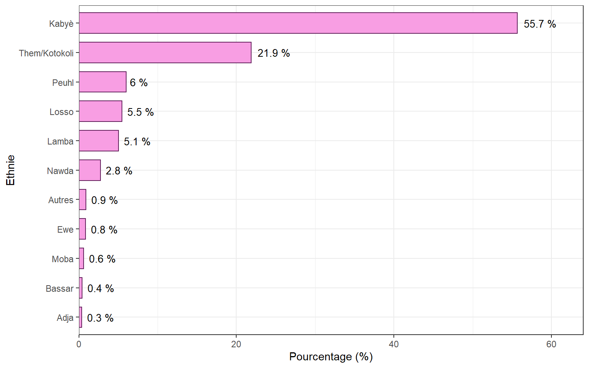

NoteInterprétation
La Figure 2 mettent en évidence que 55,7 % des chefs de ménage sont Kabyè contre 21,9 % de Tem/Kotokoli. À elles seules, ces deux ethnies regroupent ainsi environ 76,8 % des chefs de ménage enquêtés de l’échantillon, traduisant une concentration relativement importante de la population autour de ces deux principaux groupes ethniques. Les autres groupes présentent des effectifs nettement plus faibles : les Peulh représentent 6 %, les Losso 5,5 %, les Lamba 5,1 % et les Nawda 2,6 %.
Le reste des partenances ethniques sont très minoritaires. Les Ewé représentent 0,8 %, des Moba avec 0,6 %, les Bassar 0,4 % et des Adja 0,3 %. La catégorie « Autres » (Ife, Konkomba, Sola, Akposso, Lokpa, Mina, Pouda, Samourè, Yaka, Zarma) regroupe 0,9 % des enquêtés.
Au niveau de la religion la Figure 3 montre que le christianisme constitue la religion la plus représentée parmi les chefs de ménage enquêtés, avec 42,9 % de l’effectif total. Il est suivi de l’islam, pratiqué par 31,5 % des chefs de ménage. Ces deux principales religions regroupent ainsi 74,4 % des enquêtés. Les religions traditionnelles concernent pour leur part 11,2 % des chefs de ménage. Par ailleurs, une proportion non négligeable des chefs de ménage, soit 13,6, déclare n’appartenir à aucune religion, tandis que 0,8 % n’ont pas précisé leur appartenance religieuse (NSP).
4.1.1.5 - Nombre de personnes à charge
Nombre de personne à charge
Min. : 0.000
1st Qu.: 3.000
Median : 5.000
Mean : 5.676
3rd Qu.: 8.000
Max. :25.000 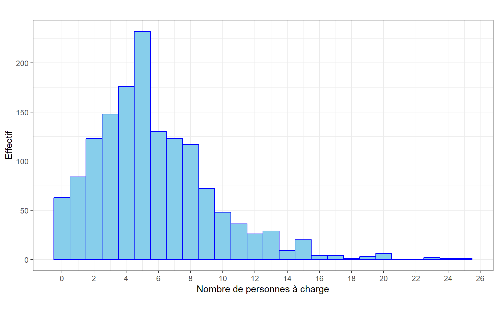
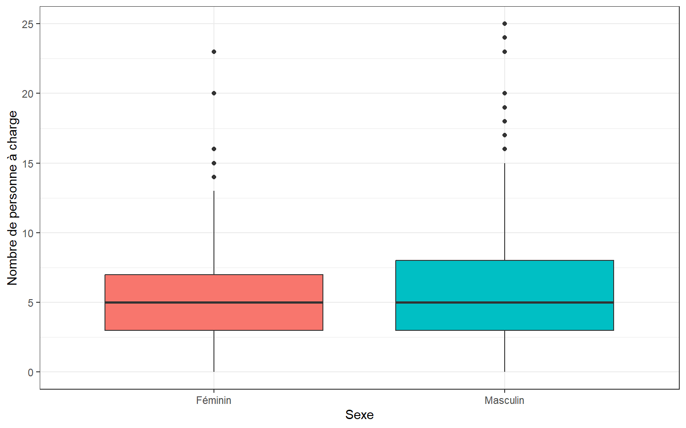
NoteInterprétation
Le nombre moyen de personnes à charge s’établit à 5,68 personnes, tandis que la médiane est de 5 personnes. Cela signifie que la moitié des ménages compte au plus 5 personnes à charge, et l’autre moitié au moins 5. La moyenne étant légèrement supérieure à la médiane, la distribution présente une certaine asymétrie (Figure 4 (a)) vers les valeurs élevées, liée à l’existence de ménages ayant un nombre important de personnes à charge.
Les quartiles montrent par ailleurs que 25 % des ménages ont au plus 3 personnes à charge, tandis que 75 % en ont au plus 8 ; autrement dit, la moitié centrale des ménages se situe entre 3 et 8 personnes à charge. Certains ménages ne déclarent donc aucune personne à charge, alors que d’autres supportent une charge familiale particulièrement élevée, pouvant atteindre 25 personnes puisque le nombre observé va de 0 à 25 personnes.
Dans l’ensemble selon la Figure 4 (b), les résultats suggèrent que le sexe du chef de ménage ne s’accompagne pas d’une différence marquée dans le nombre médian de personnes à charge
4.1.1.6 - Acte de naissance
| Enfants sans acte de naissance | Effectif | Pourcentage |
|---|---|---|
| Non | 1285 | 88.1% |
| Oui | 173 | 11.9% |
| Raisons de l'absence d'acte de naissance | Effectif | Pourcentage |
|---|---|---|
| Acte détruit ou perdu | 78 | 50.3% |
| Autre raison | 60 | 38.7% |
| Centre d'état civil trop éloigné | 11 | 7.1% |
| Coût d'établissement trop élevé | 6 | 3.9% |
NoteInterprétation
Les résultats de la Table 6 montrent que la grande majorité des ménages enquêtés (88,1 %) déclarent que les enfants ont un acte de naissance. Toutefois, 173 ménages (11,9 %) déclarent avoir au moins un enfant sans acte de naissance. Bien que minoritaire, cette proportion reste notable puisqu’elle signifie qu’environ un ménage sur huit est concerné. L’absence d’acte de naissance peut constituer un obstacle à l’exercice de certains droits et à l’accès à diverses démarches administratives et services, notamment en matière de scolarisation et d’identification.
Concernant les raisons évoquées dans la table Table 7, la principale difficulté tient à la destruction ou à la perte de l’acte de naissance, citée dans 50,3 % des cas renseignés. Les obstacles directement liés à l’accessibilité des services d’état civil apparaissent également : 7,1 % évoquent l’éloignement du centre d’état civil et 3,9 % le coût jugé trop élevé de l’établissement de l’acte.
Les « autres raisons » évoquées représentent également une part importante (38,7 %). Ces raisons sont : “l’établissement de l’acte est en cours”, “l’enfant n’était pas né au Togo”, “absence de régistre ou problème avec l’agent d’état civil”, “l’âge de l’enfant est dépassé”, “l’acte est fait mais c’est un faux”, “l’agent d’état civil a pris l’argent mais ne l’a pas fait”, “le père avait voyagé”, “le délai est dépassé”, “le manque de moyens financiers”, “par négligeance”, “l’enfant est un orphelin recueilli”, “l’oublie”. Ces résultats suggèrent ainsi que la problématique ne relève pas uniquement de l’enregistrement initial des naissances, mais également de la conservation et de la sécurisation des actes déjà établis.
4.1.2 - Education et formation
4.1.2.1 - Niveau d’éducation du chef de ménage
| Niveau d'étude | Féminin | Masculin | Total |
|---|---|---|---|
| Aucun | 188 (53.0%) | 382 (34.6%) | 570 (39.1%) |
| NSP | 0 (0.0%) | 6 (0.5%) | 6 (0.4%) |
| Primaire | 107 (30.1%) | 325 (29.5%) | 432 (29.6%) |
| Secondaire 1 (Collège) | 47 (13.2%) | 254 (23.0%) | 301 (20.6%) |
| Secondaire 2 (Lycée) | 10 (2.8%) | 110 (10.0%) | 120 (8.2%) |
| Université | 3 (0.8%) | 26 (2.4%) | 29 (2.0%) |
| Total | 355 (100.0%) | 1,103 (100.0%) | 1,458 (100.0%) |

NoteInterprétation
Selon la Table 8 et la Figure 5, le niveau d’instruction des chefs de ménage enquêtés demeure globalement faible. En effet, 39,1 % n’ont aucun niveau d’étude, tandis que 29,6 % ont atteint le primaire. Ainsi, près de sept chefs de ménage sur dix (68,7 %) n’ont pas dépassé le niveau primaire. À l’inverse, seuls 20,6 % ont atteint le secondaire 1, 8,2 % le secondaire 2 et 2,0 % l’université. Ces résultats mettent en évidence une diminution progressive des effectifs à mesure que le niveau d’étude s’élève.
Des différences importantes apparaissent également selon le sexe du chef de ménage. La proportion de personnes sans aucun niveau d’étude est nettement plus élevée chez les femmes (53,0 %) que chez les hommes (34,6 %). À l’inverse, les hommes sont proportionnellement plus nombreux aux niveaux secondaire 1 (23,0 % contre 13,2 % chez les femmes), secondaire 2 (10,0 % contre 2,8 %) et universitaire (2,4 % contre 0,8 %). Ces écarts indiquent que, parmi les chefs de ménage enquêtés, les femmes présentent globalement des niveaux d’instruction plus faibles que les hommes.
Test du Khi-deux d’indépendance entre le niveau d’éducation et le sexe du chef de ménage permet de déterminer si les différences observées sont statistiquement significatives. Le V de Cramér permettra ensuite d’en apprécier l’intensité de cette relation.
Pearson's Chi-squared test
data: with(filter(data_tchaoudjo2, education_niveau_etude != "NSP"), table(education_niveau_etude, sexe))
X-squared = 55.208, df = 4, p-value = 2.938e-11[1] "L'effectif attendu minimum est : 7.09"[1] "La valeur du V de Cramer est : 0.2"
NoteInterprétation
Après exclusion de la modalité « NSP », le test du Khi-deux de Pearson confirme l’existence d’une association statistiquement significative entre le sexe du chef de ménage et son niveau d’étude : (χ²(4) = 55,21), avec (p < 0,001). Les conditions d’application du test sont désormais pleinement satisfaites, puisque l’effectif théorique minimum est de 7,09, donc supérieur à 5. L’hypothèse d’indépendance entre les deux variables peut ainsi être rejetée : la répartition des niveaux d’étude diffère significativement selon le sexe des chefs de ménage enquêtés.
Cette association reste toutefois d’une intensité faible à modérée, comme l’indique le V de Cramér de 0,20. Les résultats descriptifs permettent d’en préciser le sens : les femmes chefs de ménage sont proportionnellement plus nombreuses à n’avoir aucun niveau d’étude (53,0 % contre 34,6 % chez les hommes), tandis que les hommes sont davantage représentés dans les niveaux secondaire et universitaire. Ces résultats mettent donc en évidence des disparités de niveau d’instruction selon le sexe parmi les chefs de ménage enquêtés, sans pour autant permettre d’établir une relation causale entre le sexe et le niveau d’étude.
4.1.2.2 - Relation entre l’éducation des enfants et le niveau d’étude du chef de ménage
| Niveau d'étude | Non | Oui | Total |
|---|---|---|---|
| Aucun | 536 (38.1%) | 34 (73.9%) | 570 (39.3%) |
| Primaire | 423 (30.1%) | 9 (19.6%) | 432 (29.8%) |
| Secondaire 1 (Collège) | 299 (21.3%) | 2 (4.3%) | 301 (20.7%) |
| Secondaire 2 (Lycée) | 119 (8.5%) | 1 (2.2%) | 120 (8.3%) |
| Université | 29 (2.1%) | 0 (0.0%) | 29 (2.0%) |
| Total | 1,406 (100.0%) | 46 (100.0%) | 1,452 (100.0%) |
NoteInterprétation
La Table 9 semblre mettre en évidence une relation entre le niveau d’étude du chef de ménage et la présence d’enfants de 9 à 14 ans non scolarisés dans le ménage. Parmi les 46 sur 1452 ménages déclarant des enfants de 9 à 14 ans non scolarisés, 73,9 % des chefs de ménage n’ont aucun niveau d’étude, contre seulement 38,1 % parmi les ménages ne déclarant pas cette situation. À l’inverse, les niveaux d’instruction plus élevés sont beaucoup moins représentés parmi les ménages concernés : 19,6 % des chefs ont le niveau primaire, 4,3 % le secondaire 1, 2,2 % le secondaire 2 et aucun n’a atteint l’université. Ces résultats suggèrent donc que la non-scolarisation des enfants de 9 à 14 ans est davantage observée dans les ménages dont le chef présente un faible niveau d’instruction.
Test du Khi-deux d’indépendance entre le niveau d’éducation du chef de ménage et la scolarisation des enfants (9-14 ans) permet de déterminer si les différences observées sont statistiquement significatives. Le V de Cramér permettra ensuite d’en apprécier l’intensité de cette relation.
Pearson's Chi-squared test
data: with(filter(data_tchaoudjo2, education_niveau_etude != "NSP"), table(education_niveau_etude, education_9_14ans_non_scolarise))
X-squared = 25.423, df = 4, p-value = 4.136e-05[1] "L'effectif attendu minimum est : 0.92"
WarningPoint d’attention
En raison de la faiblesse de certains effectifs théoriques, la significativité sera vérifiée à l’aide d’un test de Fisher. Ce test conserve les cinq niveaux d’étude tout en évitant de dépendre de l’approximation asymptotique du Khi-deux lorsque certains effectifs théoriques sont très faibles.
education_9_14ans_non_scolarise
education_niveau_etude Non Oui
Aucun 536 34
Primaire 423 9
Secondaire 1 (Collège) 299 2
Secondaire 2 (Lycée) 119 1
Université 29 0
Fisher's Exact Test for Count Data
data: tab_etude_parent_scolarisation
p-value = 6.736e-05
alternative hypothesis: two.sided[1] 0.1323211
NoteInterprétation
Les résultats mettent en évidence une association statistiquement significative entre le niveau d’étude du chef de ménage et la présence d’enfants de 9 à 14 ans non scolarisés dans le ménage. Le résultat confirme l’association observée (χ² = 25,42 ; p < 0,001). Les ménages concernés par la non-scolarisation sont particulièrement concentrés parmi ceux dont le chef n’a aucun niveau d’étude : 73,9 % des ménages déclarant au moins un enfant de 9 à 14 ans non scolarisé ont un chef sans niveau d’étude, contre 38,1 % parmi les ménages non concernés. Toutefois, le V de Cramér (V = 0,13) indique que l’intensité de l’association demeure faible. Ces résultats mettent ainsi en évidence un lien statistique entre les deux variables, sans permettre d’établir une relation de causalité.
4.1.2.3 - Raison de la non scolarisation des enfants
| Raisons de la non scolarisation des enfants | Effectif | Pourcentage |
|---|---|---|
| Abandon, mauvais résultats scolaires | 19 | 41.3% |
| En apprentissage | 9 | 19.6% |
| Autres raisons | 5 | 10.9% |
| Trop jeune | 4 | 8.7% |
| Ecole trop éloignée | 3 | 6.5% |
| Maladie, infirmité ou accident | 2 | 4.3% |
| Manque de moyens financiers | 2 | 4.3% |
| Préférence pour le travail | 2 | 4.3% |
NoteInterprétation
Les résultats de la Table 10 montrent que la principale raison de non-scolarisation des enfants de 9-14 ans est l’abandon ou les mauvais résultats scolaires, qui représentent 41,3 % des cas (19 enfants). Cette situation met en évidence l’importance des difficultés de maintien des enfants dans le système scolaire au niveau de certains ménages. L’apprentissage constitue la deuxième raison avec 19,6 % (9 cas), ce qui indique qu’une partie des enfants non scolarisés s’oriente vers l’acquisition d’un métier en dehors du cursus scolaire formel alors que loi impose la scolarité pour les enfants jusqu’à l’âge de 15 ans au Togo. Les autres raisons représentent 10,9 %, tandis que 8,7 % des cas sont liés au fait que l’enfant est considéré comme trop jeune, ce qui parrait atypique.
Les contraintes d’accessibilité ou socioéconomiques apparaissent moins fréquemment citées : l’éloignement de l’école représente 6,5 % des cas, tandis que le manque de moyens financiers, la maladie, l’infirmité ou un accident et la préférence pour le travail représentent chacun 4,3 %. Dans l’ensemble, les résultats suggèrent que la non-scolarisation observée est davantage associée aux difficultés de parcours et de maintien à l’école qu’aux seules contraintes financières ou géographiques. Toutefois un faible nombre de ménages sont concernés par ces situations à savoir seulement 46 ménages sur 1452 qui ont répondu à la question.
4.1.2.4 - Alphabétisation
| Ne sais pas lire et écrire | Effectif | Pourcentage |
|---|---|---|
| Non | 1351 | 92.7% |
| Oui | 107 | 7.3% |
| Suit un cours d'alphabétisation | Effectif | Pourcentage |
|---|---|---|
| Non | 96 | 89.7% |
| Oui | 7 | 6.5% |
| NSP | 4 | 3.7% |
NoteInterprétation
Les résultats des Table 11 et Table 12 montrent que 107 ménages enquêtés, soit 7,3 %, déclarent compter au moins une personne âgée de 15 ans ou plus ne sachant ni lire ni écrire, contre 92,7 % qui ne signalent aucune personne dans cette situation. Bien que cette proportion soit minoritaire à l’échelle des ménages enquêtés, elle met en évidence la persistance de situations d’analphabétisme au sein d’une partie de la population adulte de la commune.
Parmi les ménages concernés, le recours aux dispositifs d’alphabétisation apparaît toutefois très limité : seulement 7 personnes, soit 6,5 %, suivent un cours d’alphabétisation, contre 96 (89,7 %) qui n’en suivent pas ; 3,7 % des réponses sont indéterminées (NSP). Ainsi, la grande majorité des personnes identifiées comme ne sachant ni lire ni écrire ne semble pas bénéficier d’un apprentissage compensatoire. Ces résultats mettent en évidence un écart important entre l’existence d’un besoin d’alphabétisation et la participation effective aux cours, ce qui invite à examiner notamment la disponibilité et l’accessibilité des programmes d’alphabétisation ainsi que les facteurs susceptibles de limiter leur fréquentation.
4.1.2.5 - Apprentissage et formation professionnelle
| Formation professionnelle/apprentissage | Effectif | Pourcentage |
|---|---|---|
| Non | 1274 | 87.4% |
| Oui | 184 | 12.6% |
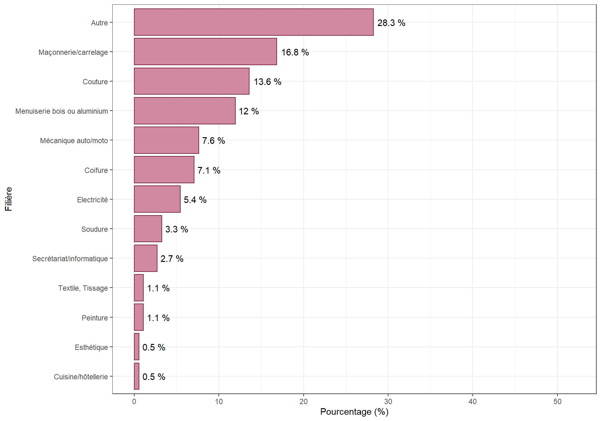
NoteInterprétation
La Figure 6 montre une diversification des filières d’apprentissage, avec toutefois une prédominance des métiers artisanaux et techniques. La maçonnerie/carrelage constitue la principale filière avec 17,4 % des apprenants, suivie de la couture (13,6 %), de la menuiserie bois ou aluminium (12,0 %) et de la ferraille/soudure/forge (10,9 %). À elles seules, ces quatre filières concentrent plus de la moitié des apprenants (53,9 %), traduisant une forte orientation vers les métiers du bâtiment, de l’artisanat et de la production.
D’autres filières occupent également une place non négligeable, notamment la mécanique auto/moto (8,2 %), la coiffure (7,1 %) et l’électricité (6,5 %). En revanche, l’agriculture/élevage (4,3 %), l’enseignement (2,7 %), le secrétariat/informatique (2,7 %), le textile/tissage (1,6 %) et la peinture (1,1 %) restent faiblement représentés. Dans l’ensemble, ces résultats mettent en évidence le rôle important de l’apprentissage professionnel comme voie d’acquisition de compétences pratiques, principalement orientée vers les métiers artisanaux et techniques.
4.2 - Conditions socioéconomiques des ménages
4.2.1 - Emploi, revenu et conditions de vie
4.2.1.1 - Profession du chef de ménage
| Profession | Effectif | Pourcentage |
|---|---|---|
| Agriculteur, éleveur, pêcheur | 678 | 46.5% |
| Sans emploi | 375 | 25.7% |
| Artisan (couture, coifure, menuiserie, etc.) | 118 | 8.1% |
| Comerçant(e), revendeur(se) | 86 | 5.9% |
| Enseignant, éducateur, instituteur | 54 | 3.7% |
| Ménagère | 52 | 3.6% |
| Autre | 33 | 2.3% |
| Chaufeur de taxi/taxi moto/tricycle | 22 | 1.5% |
| Retraité | 13 | 0.9% |
| Elève/étudiant | 8 | 0.5% |
| Agent de santé | 5 | 0.3% |
| Chef d'entreprise/profession libérale | 4 | 0.3% |
| Agent de développement | 3 | 0.2% |
| Employé de bureau (secrétaire, comptable, caissière) | 3 | 0.2% |
| Ouvrier | 3 | 0.2% |
| Stagiaire | 1 | 0.1% |
NoteInterprétation
La structure professionnelle des chefs de ménage enquêtés est fortement dominée par les activités du secteur primaire, avec 46,5 % d’agriculteurs, éleveurs ou pêcheurs. Cette prédominance confirme le poids important des activités agro-pastorales dans les moyens d’existence des ménages. Toutefois, la proportion élevée de chefs de ménage déclarés sans emploi (25,7 %) constitue également un résultat majeur : plus d’un chef de ménage sur quatre ne dispose pas d’un emploi déclaré. Les activités artisanales (8,1 %) et commerciales (5,9 %) constituent les principales professions après l’agriculture, tandis que les enseignants, éducateurs et instituteurs représentent 3,7 % et les ménagères 3,6 %.
Les autres catégories professionnelles restent très faiblement représentées individuellement : chauffeurs de taxi/taxi-moto/tricycle (1,5 %), autres professions (1,4 %), retraités (0,9 %) et élèves/étudiants (0,5 %), tandis que plusieurs professions spécialisées représentent chacune moins de 0,5 %. Dans l’ensemble, cette répartition met en évidence une faible diversification des activités professionnelles, avec une forte concentration dans l’agriculture et, dans une moindre mesure, l’artisanat et le commerce. Elle souligne également l’importance de la question de l’emploi, compte tenu du poids des personnes sans emploi parmi les chefs de ménage enquêtés.
4.2.1.2 - Domaine et secteur d’activité du chef de ménage
| Domaine d'activité | Effectif | Pourcentage |
|---|---|---|
| Agriculture, élevage, pêche | 1055 | 72.4% |
| Artisanat | 114 | 7.8% |
| Commerce | 94 | 6.4% |
| Autre | 67 | 4.6% |
| Education | 49 | 3.4% |
| Transport | 22 | 1.5% |
| Développement économique et social | 20 | 1.4% |
| Industrie, transformation | 14 | 1.0% |
| Santé | 7 | 0.5% |
| Social, humanitaire | 4 | 0.3% |
| Electricité, énergie | 3 | 0.2% |
| Mine, extraction | 3 | 0.2% |
| Télécom, communication, informatique | 3 | 0.2% |
| Environnement, forêts | 2 | 0.1% |
| Hôtellerie, restauration, cafétéria | 1 | 0.1% |
NoteInterprétation
La répartition des chefs de ménage selon leur domaine d’activité confirme la forte orientation agro-pastorale de l’économie locale : l’agriculture et l’élevage concentrent à eux seuls 72,4 % des enquêtés (1 055 personnes). Loin derrière, l’artisanat (7,8 %) et le commerce (6,4 %) constituent les deux autres principaux domaines d’activité, tandis que l’éducation représente 3,4 % et le transport 1,5 %. Les activités relevant de l’industrie et de la transformation ne représentent que 1,0 %, et les secteurs tels que la santé, l’énergie, les télécommunications, l’environnement ou l’hôtellerie restent chacun en dessous de 1 %. Cette structure met ainsi en évidence une faible diversification des domaines d’activité, caractérisée par une forte dépendance aux activités agricoles et une présence encore limitée des activités de transformation et des services spécialisés.
La structure professionnelle des chefs de ménage enquêtés est fortement dominée par les activités du secteur primaire, avec 46,5 % d’agriculteurs. Cette prédominance confirme le poids important des activités agro-pastorales dans les moyens d’existence des ménages. Toutefois, la proportion élevée de chefs de ménage déclarés sans emploi (25,7 %) constitue également un résultat majeur : plus d’un chef de ménage sur quatre ne dispose pas d’un emploi déclaré. Les activités artisanales (8,1 %) et commerciales (5,9 %) constituent les principales professions après l’agriculture, tandis que les enseignants, éducateurs et instituteurs représentent 3,7 % et les ménagères 3,6 %.

NoteInterprétation
La répartition des chefs de ménage selon leur secteur d’activité montre une très forte prédominance du secteur privé, qui concentre 94,0 % des actifs (1 371 personnes). Cette situation s’explique notamment par le poids des activités agricoles, artisanales, commerciales et autres activités indépendantes dans l’économie locale. À l’inverse, l’administration publique ne représente que 4,9 %, tandis que les entreprises publiques (0,8 %) et les ONG/associations (0,3 %) occupent une place marginale. Cette structure traduit ainsi une économie locale essentiellement portée par les activités privées, avec une faible présence de l’emploi public et institutionnel parmi les chefs de ménage enquêtés.
4.2.1.3 - Revenu selon le sexe du chef de ménage
Pour faciliter l’analyse, les modalités des tranches de revenu de “52 500 à 99 900 F”, “100 000 à 149 000” et 150 000 et plus seront regroupées pour palier aux faibles effectifs de certaines cellules.
On obtient le tableau Table 17 ci-dessous :
| Tranches de revenu | Féminin | Masculin | Total |
|---|---|---|---|
| Pas de revenu | 127 | 450 | 577 |
| Moins de 52 500 F | 62 | 262 | 324 |
| 52 500 à 99 900 F | 21 | 78 | 99 |
| 100 000 à 149 900 F | 7 | 32 | 39 |
| 150 000 F et plus | 5 | 31 | 36 |
| Total | 222 | 853 | 1075 |
NoteInterprétation
Le tableau présente la répartition des revenus de 1 075 chefs de ménage, après exclusion des personnes sans emploi et des élèves ou étudiants. L’échantillon analysé comprend 222 femmes (20,7 %) et 853 hommes (79,3 %). Les résultats montrent une forte concentration dans les catégories de revenus faibles ou inexistants. Au total, 577 personnes (53,7 %) déclarent ne percevoir aucun revenu et 324 (30,1 %) gagnent moins de 52 500 F CFA qui est le niveau du Salaire Minimum Interprofessionnel Garanti (SMIG) au Togo. Ainsi, 83,8 % des répondants ne disposent d’aucun revenu ou perçoivent moins de 52 500 F CFA. Cette proportion atteint 93,0 % lorsqu’on inclut les personnes gagnant entre 52 500 et 99 900 F CFA.
Cette tendance est observée chez les deux sexes. Parmi les femmes, 57,2 % déclarent ne percevoir aucun revenu, contre 52,8 % des hommes. En regroupant l’absence de revenu et les revenus inférieurs à 52 500 F CFA, les proportions atteignent respectivement 85,1 % chez les femmes et 83,5 % chez les hommes.
Les tranches supérieures sont très peu représentées. Seulement 3,2 % des femmes et 3,8 % des hommes gagnent entre 100 000 et 149 900 F CFA. De même, 2,3 % des femmes contre 3,6 % des hommes déclarent un revenu mensuel d’au moins 150 000 F CFA.
Dans l’ensemble, la distribution des revenus paraît assez similaire selon le sexe, même si les femmes sont légèrement plus nombreuses, proportionnellement, à ne percevoir aucun revenu, tandis que les hommes sont un peu plus représentés dans la tranche de 150 000 F CFA et plus. Ces écarts restent descriptifs et doivent être confirmés par un test statistique avant de conclure à une association entre le sexe et le niveau de revenu.
La proportion élevée de chefs de ménage déclarant ne percevoir aucun revenu, malgré l’exclusion des personnes sans emploi et des élèves ou étudiants, peut s’expliquer par l’importance des activités informelles, agricoles, saisonnières ou familiales non rémunérées. Dans ces situations, l’exercice d’une profession ne garantit pas nécessairement la perception d’un revenu monétaire régulier. Certains ménages peuvent également tirer leurs moyens de subsistance de l’autoconsommation, des transferts familiaux ou de rémunérations en nature, sans considérer ces ressources comme un revenu. Enfin, la difficulté à estimer des gains irréguliers, la compréhension de la notion de revenu comme un salaire formel et une éventuelle réticence à déclarer les ressources financières peuvent avoir contribué à cette proportion élevée. Ces résultats ne signifient donc pas nécessairement que les ménages ne disposent d’aucune ressource économique, mais plutôt qu’ils ne déclarent aucun revenu monétaire personnel clairement identifiable.
Réalisation du test de Khi2
sexe
revenu_rec2 Féminin Masculin
100 000 à 149 900 F 7 32
150 000 F et plus 5 31
52 500 à 99 900 F 21 78
Moins de 52 500 F 62 262
Pas de revenu 127 450
Pearson's Chi-squared test
data: tab_revenu_rec2
X-squared = 2.302, df = 4, p-value = 0.6804[1] 0.0462756 sexe
revenu_rec2 Féminin Masculin
100 000 à 149 900 F 8.053953 30.94605
150 000 F et plus 7.434419 28.56558
52 500 à 99 900 F 20.444651 78.55535
Moins de 52 500 F 66.909767 257.09023
Pas de revenu 119.157209 457.84279
NoteInterprétation
Les résultats du test du Khi-deux de Pearson ne mettent pas en évidence d’association statistiquement significative entre le sexe du chef de ménage et sa tranche de revenu. En effet, le test donne (χ²(4)=2,30) avec une p-value de 0,680, largement supérieure au seuil de 5 %. On ne peut donc pas rejeter l’hypothèse d’indépendance entre les deux variables. Les données ne permettent pas de conclure à une association statistiquement significative entre le sexe du chef de ménage et sa tranche de revenu.
Cette conclusion est également cohérente avec le V de Cramér de 0,046, qui traduit une association de très faible intensité entre les deux variables. Ainsi, dans l’échantillon étudié, le sexe du chef de ménage apparaît peu associé à son appartenance aux différentes tranches de revenu. En conclusion, parmi les chefs de ménage professionnellement actifs retenus dans l’analyse, la répartition par tranche de revenu apparaît globalement comparable entre les femmes et les hommes.
Les informations qualitatives recueillies lors des focus groups avec les femmes permettent d’éclairer ce résultat. Elles font ressortir une forte implication des femmes dans les activités économiques, notamment dans le commerce, ainsi que leur participation à des groupements et systèmes de tontine, qui constituent des mécanismes importants de mobilisation de l’épargne et de financement de leurs activités. Les participantes ont également souligné leur contribution substantielle aux dépenses du ménage, notamment pour l’éducation et la santé des enfants, ainsi que l’appui financier qu’elles peuvent apporter à leur conjoint en période de difficulté. Ces constats qualitatifs sont cohérents avec l’absence d’un écart statistiquement significatif de revenu selon le sexe et montrent que l’activité économique et la contribution financière des femmes occupent une place importante dans l’économie des ménages.
4.2.1.4 - Difficulté du chef de ménage à faire face aux besoins vitaux du ménage
| Difficultés | Effectif | Pourcentage |
|---|---|---|
| Oui | 927 | 63.6% |
| Non | 531 | 36.4% |
NoteInterprétation
Les résultats de la Table 18 montrent que les difficultés économiques et sociales touchent une large majorité des ménages enquêtés : 927 ménages, soit 63,6 %, déclarent rencontrer des difficultés pour satisfaire leurs principaux besoins, contre 36,4 % qui n’en déclarent pas.
Les difficultés rencontrées par les ménages apparaissent principalement liées à la satisfaction des besoins essentiels, avec une forte imbrication des contraintes alimentaires, sanitaires et éducatives. La combinaison la plus fréquemment déclarée associe en effet la nécessité de nourrir la famille, d’assurer l’accès aux soins de santé et de prendre en charge la scolarité des enfants. L’accès aux soins ressort également comme une préoccupation importante, aussi bien lorsqu’il est cité seul qu’en association avec l’alimentation, la scolarité ou encore le transport. Dans l’ensemble, la multiplicité des combinaisons déclarées montre que les ménages sont généralement confrontés à plusieurs difficultés simultanées, traduisant des contraintes économiques qui affectent conjointement leur capacité à assurer l’alimentation, la santé, l’éducation des enfants, le paiement des charges courantes et les déplacements.
4.2.2 - Accès à l’eau potable
4.2.2.1 - Source d’approvisionnement en eau au sein du ménage
| Source d'eau disponible dans le ménage | Effectif | Pourcentage |
|---|---|---|
| Non | 934 | 64.1% |
| Oui | 524 | 35.9% |
| Type de source d'eau dans le ménage | Effectif | Pourcentage |
|---|---|---|
| Puit | 361 | 68.9% |
| PMH (Pompe à motricité humaine) | 57 | 10.9% |
| Adduction d'eau potable (AEP) communautaire | 47 | 9.0% |
| Forage personnel | 35 | 6.7% |
| Combinaisons de plusieurs sources | 24 | 4.6% |
4.2.2.2 - Source principale d’approvisionnement pour l’eau potable

NoteInterprétation
Les résultats de la Table 20 mettent en évidence une disponibilité limitée des sources d’eau au sein même des ménages : seuls 35,9 % des ménages (524) déclarent disposer d’une source d’eau, contre 64,1 % (934) qui n’en disposent pas.
Selon la Table 21 Parmi les ménages disposant d’une source, le puits domine très largement (68,9 %), loin devant les pompes à motricité humaine (10,9 %), les adductions d’eau potable communautaires (9,0 %) et les forages personnels (6,7 %). Les autres situations correspondent essentiellement à des ménages combinant plusieurs types de sources et restent marginales. Cette configuration traduit donc une forte prédominance des solutions traditionnelles ou individuelles, en particulier les puits, et une présence relativement limitée des infrastructures améliorées d’approvisionnement en eau au niveau des ménages.
Concernant la source principale d’eau potable (Figure 8), les puits occupent également la première place : 53,9 % des ménages déclarent l’eau de puits comme principale source, contre 24,8 % pour les forages et 18,9 % pour les PMH. L’eau de surface (marigot, rivière) concerne encore 2,5 % des ménages. Ainsi, plus de la moitié des ménages dépendent principalement des puits pour leur approvisionnement en eau destinée à la consommation alors que l’eau de puit n’est pas considérée comme source d’eau potable. Ce résultat constitue un enjeu important pour l’accès à une eau de qualité, notamment selon le niveau de protection des puits et la qualité effective de l’eau. La persistance du recours aux eaux de surface, même minoritaire, signale également l’existence de ménages particulièrement vulnérables en matière d’accès à l’eau potable.
4.2.2.3 - Distance du ménage par rapport au point d’eau
- Statistiques descriptives
| Nombre d'observations | Moyenne | Q1 | Médiane | Q3 | Variance | Écart-type | Minimum | Maximum | Étendue | IQR |
|---|---|---|---|---|---|---|---|---|---|---|
| 934.0 | 360.9 | 50.0 | 200.0 | 500.0 | 192,442.2 | 438.7 | 0.0 | 3,000.0 | 3,000.0 | 450.0 |
Boxplot (boîte à moustaches)
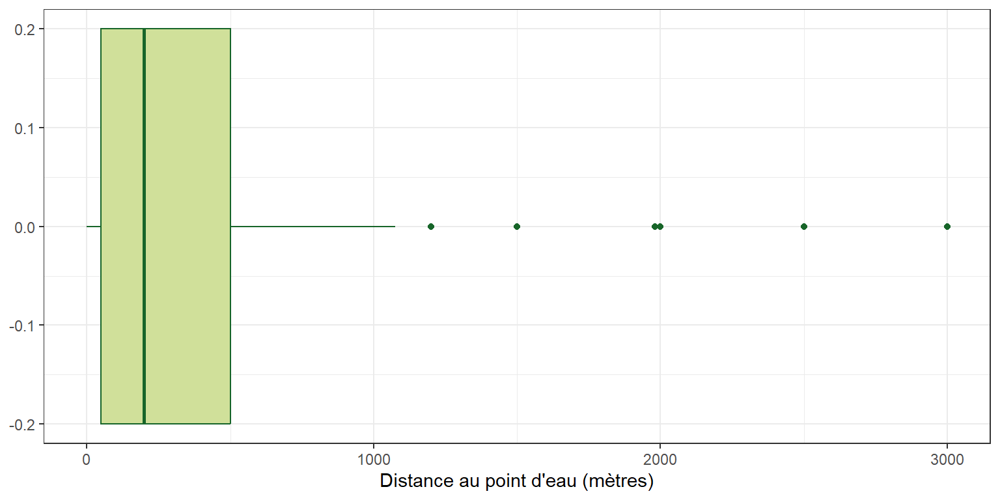
NoteInterprétation
Les résultats de la Table 22 montrent que la distance moyenne entre le ménage et le point d’eau est d’environ 361 mètres, tandis que la médiane est de 200 mètres, ce qui signifie que la moitié des ménages concernés se situe à 200 mètres ou moins d’un point d’eau et l’autre moitié à plus de 200 mètres. Le premier quartile est de 50 mètres et le troisième quartile de 500 mètres : ainsi, 50 % des ménages se trouvent à une distance comprise entre 50 et 500 mètres. Un ménage sur quatre parcours plus de 500 mètre pour atteindre un point d’eau alors que les normes stipulent qu’un point d’eau potable ne doit pas être au delà de 500 mètres.
Le boxplot confirme une forte asymétrie de la distribution des distances au point d’eau. La médiane se situe à 200 mètres, tandis que 50 % des ménages concernés se trouvent approximativement entre 50 mètres (1er quartile) et 500 mètres (3e quartile). Le graphique met ainsi en évidence des inégalités d’accessibilité géographique à l’eau. Cette forte dispersion est également confirmée par un écart-type de 438,7 mètres, indiquant que les distances observées sont très dispersées autour de la moyenne. La médiane et l’écart interquartile constituent donc des indicateurs particulièrement pertinents pour caractériser la situation générale, car ils sont moins sensibles aux distances exceptionnellement élevées que la moyenne et l’écart-type. Ces résultats mettent ainsi en évidence des disparités importantes d’accessibilité géographique à l’eau entre les ménages de la commune. Certains ménages doivent donc parcourir des distances particulièrement importantes pour accéder à l’eau.
4.2.2.3.1 - Analyse de la relation entre distance au point d’eau et la zone de résidence du ménage**
| Statistique | Nord-Est | Nord-Ouest | Sud-Est | Sud-Ouest |
|---|---|---|---|---|
| Nombre d'observations | 370,0 | 42,0 | 265,0 | 257,0 |
| Moyenne | 357,1 | 272,7 | 287,6 | 456,3 |
| Q1 | 100,0 | 20,0 | 20,0 | 140,0 |
| Médiane | 200,0 | 45,0 | 100,0 | 250,0 |
| Q3 | 500,0 | 500,0 | 500,0 | 500,0 |
| Écart-type | 399,8 | 378,3 | 338,2 | 560,5 |
| Minimum | 0,0 | 8,0 | 1,0 | 2,0 |
| Maximum | 3 000,0 | 1 500,0 | 1 980,0 | 3 000,0 |
NoteInterprétation
L’analyse par zone de la Table 23 met en évidence des disparités importantes dans l’accessibilité géographique des ménages aux points d’eau. La situation apparaît particulièrement contraignante dans la zone Sud-Ouest, où la distance moyenne atteint 456,3 m et la médiane 250 m, soit les valeurs les plus élevées des quatre zones. Cette zone présente également la plus forte dispersion des distances, avec un écart-type de 560,5 m, traduisant des situations très hétérogènes entre les ménages. À l’inverse, le Nord-Ouest enregistre la médiane la plus faible (45 m) et un premier quartile de seulement 20 m*, même si sa moyenne de 272,7 m et son écart-type élevé (378,3 m) révèlent la présence de ménages beaucoup plus éloignés. Le Sud-Est présente également une situation relativement plus favorable, avec une médiane de 100 m et une moyenne de 287,6 m, tandis que le Nord-Est se caractérise par une médiane de 200 m, une moyenne de 357,1 m et des distances pouvant atteindre 3 000 m.
Dans toutes les zones, la moyenne est sensiblement supérieure à la médiane et les écarts-types sont élevés, ce qui indique des distributions asymétriques vers les grandes distances, sous l’effet de ménages particulièrement éloignés des points d’eau. Par ailleurs, le troisième quartile est de 500 m dans les quatre zones, signifiant qu’environ 75 % des ménages disposant d’une distance renseignée se situent à 500 m ou moins d’un point d’eau et que 25 % des ménages se situent à 500 m ou plus.
Ces résultats montrent donc que, derrière cette caractéristique commune, les conditions d’accès restent très différenciées, avec des contraintes particulièrement marquées pour une partie des ménages du Sud-Ouest et du Nord-Est.
4.2.2.3.2 - Les distances d’accès à l’eau diffèrent-elles selon les quatre zones de résidence ?
Q-Q plots pour chauque zone de résidence afin de vérifier la normalité des distributions.
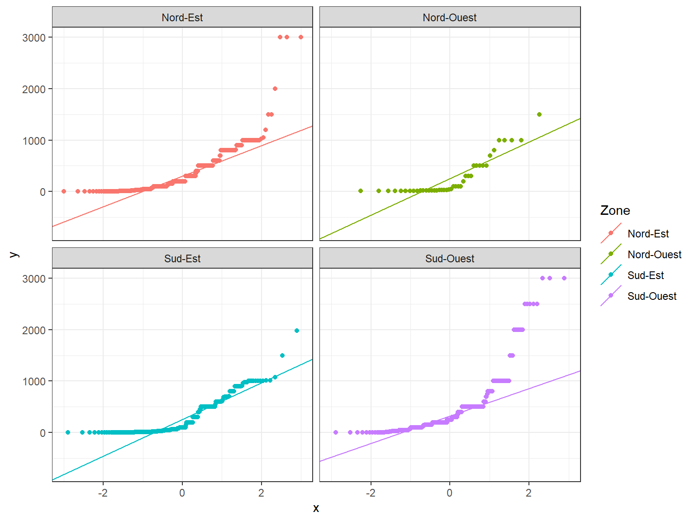
NoteInterprétation du QQ-plot
Les QQ-plots (Figure 10) montrent que, dans les quatre zones, les observations s’écartent sensiblement de la droite théorique d’une distribution normale, particulièrement dans la partie supérieure des distributions. Les écarts sont très marqués pour les grandes distances, notamment au Nord-Est et au Sud-Ouest, où plusieurs observations atteignent 2 000 à 3 000 mètres. On observe également une accumulation importante des observations aux faibles distances et une longue queue vers les valeurs élevées. Ces configurations traduisent des distributions asymétriques à droite et une violation manifeste de l’hypothèse de normalité. Le phénomène est observable dans toutes les zones, même si son intensité varie.
Boxplots pour examiner graphiquement les distributions de chaque zone de résidence.
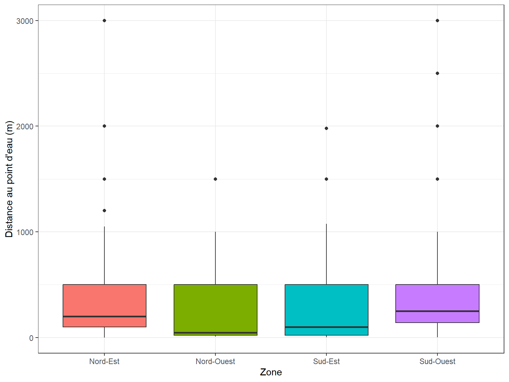
NoteInterprétation du boxplot
Le boxplot (Figure 11) confirme cette forte asymétrie et met en évidence des différences de position et de dispersion entre les zones. Les médianes sont visuellement différentes : elles sont notamment plus élevées au Sud-Ouest et au Nord-Est et plus faibles au Nord-Ouest et au Sud-Est, ce qui concorde avec les statistiques descriptives précédemment obtenues. Les quatre distributions présentent également des valeurs extrêmes dans leur partie supérieure. Le Sud-Ouest semble présenter une dispersion particulièrement importante, tandis que le Nord-Ouest se caractérise par une forte concentration des observations aux faibles distances, accompagnée néanmoins de quelques valeurs élevées. Ces résultats indiquent donc une forte hétérogénéité des distances à l’intérieur des zones et suggèrent des différences entre zones.
Histogrammes pour examiner graphiquement les distributions de chaque zone de résidence.
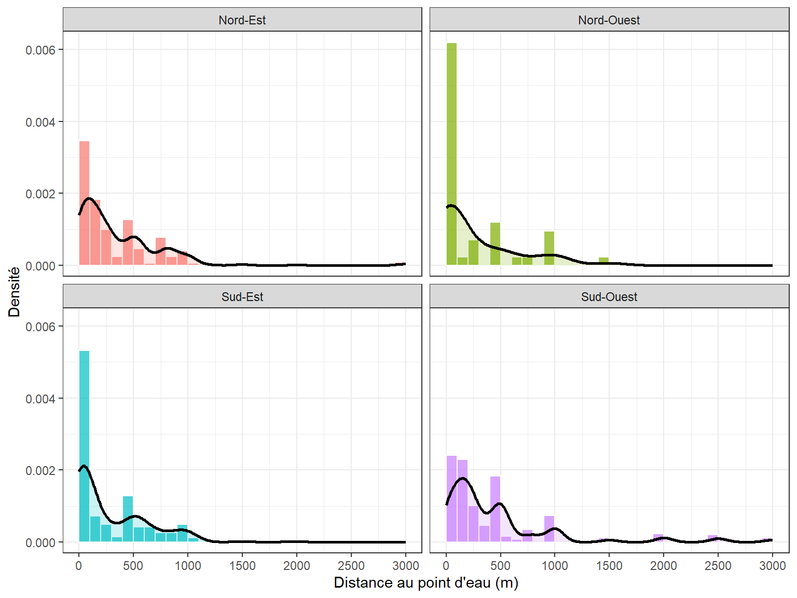
NoteInterprétation de l’histogramme
Ce graphique confirme nettement les constats issus des statistiques descriptives, des boxplots et des QQ-plots. Dans les quatre zones, la distribution des distances au point d’eau est fortement asymétrique à droite : les observations sont principalement concentrées sur les faibles distances, tandis qu’un nombre plus limité de ménages parcourt des distances beaucoup plus importantes, formant une longue queue vers la droite.
Tester l’homogénéité des variances avec le test de Levene
Levene's Test for Homogeneity of Variance (center = median)
Df F value Pr(>F)
group 3 2.3096 0.07493 .
930
---
Signif. codes: 0 '***' 0.001 '**' 0.01 '*' 0.05 '.' 0.1 ' ' 1
NoteInterprétation du test de Levene
Le test de Levene ne met pas en évidence de différence statistiquement significative entre les variances des quatre zones au seuil de 5 % (F(3, 930) = 2,31 ; p = 0,075), de sorte que l’hypothèse d’homogénéité des variances n’est pas rejetée.
Toutefois, compte tenu de la forte asymétrie des distributions, de la présence de valeurs extrêmes et du non-respect manifeste de la normalité, une approche non paramétrique apparaît appropriée pour comparer les distances entre les quatre zones. Le test de Kruskal-Wallis sera ainsi utilisé pour déterminer si la distribution des distances d’accès au point d’eau diffère significativement selon la zone de résidence.
Test de Kruskal-Wallis pour comparer les distances au point d’eau entre les quatre zones de résidence
Le de Kruskal-Wallis est un test non paramétrique utile lorsque les distributions sont fortement asymétriques dans le cadre d’un échantillon indépendant avec plus de 2 groupes. Il se repose sur les rangs et teste si les distributions des groupes diffèrent.
- Hypothèses du test :
H₀ — Hypothèse nulle : la distribution des distances d’accès au point d’eau ne diffère pas significativement entre les quatre zones de résidence. H₁ — Hypothèse alternative : la distribution des distances d’accès au point d’eau diffère significativement entre au moins deux zones de résidence.
La règle de décision au seuil de 5 % est :
p ≥ 0,05 : on ne rejette pas H₀ ; les données ne permettent pas de mettre en évidence une différence statistiquement significative entre les zones ;
p < 0,05 : on rejette H₀ ; les distances d’accès à l’eau diffèrent statistiquement entre au moins deux zones.
- Réaliser le test global de Kruskal-Wallis
Kruskal-Wallis rank sum test
data: eau_distance by Zone
Kruskal-Wallis chi-squared = 32.615, df = 3, p-value = 3.883e-07
NoteInterprétation du test de Kruskal-Wallis
Le test de Kruskal-Wallis met en évidence une différence statistiquement significative de la distance d’accès au point d’eau entre les quatre zones de résidence (χ²(3) = 32,615 ; p = 3,883 × 10⁻⁷). La p-value étant très largement inférieure au seuil de 5 %, l’hypothèse nulle d’absence de différence entre les distributions des distances selon les zones est rejetée.
On peut donc conclure que la distance d’accès au point d’eau diffère significativement selon la zone de résidence. Autrement dit, les écarts observés dans les statistiques descriptives ne peuvent raisonnablement être attribués aux seules fluctuations d’échantillonnage. Les résultats descriptifs suggérant des conditions d’accessibilité géographique différentes selon les zones. Toutefois, le test de Kruskal-Wallis étant un test global, ce résultat permet uniquement d’affirmer qu’au moins deux zones diffèrent significativement ; il ne permet pas d’identifier lesquelles. Il convient donc de compléter l’analyse par un test post-hoc de Dunn, avec correction des p-values pour comparaisons multiples, ainsi que par une taille d’effet afin d’apprécier l’ampleur pratique des différences observées.
- Mesurer la taille de l’effet
Une p-value significative indique l’existence d’une différence entre les zones, mais pas son importance. Pour cela, il est nécessaire de calculer la taille d’effet du test de Kruskal-Wallis. La taille d’effet permet d’évaluer l’ampleur de la différence entre les groupes et de déterminer si cette différence est cliniquement ou pratiquement significative.:
# A tibble: 1 × 5
.y. n effsize method magnitude
* <chr> <int> <dbl> <chr> <ord>
1 eau_distance 934 0.0318 eta2[H] small - Identification des zones différentes
Kruskal-Wallis te dira seulement qu’une différence existe quelque part parmi les quatre zones. Il faudra ensuite effectuer des comparaisons deux à deux.
On obtiendra les six comparaisons :
Nord-Est vs Nord-Ouest
Nord-Est vs Sud-Est
Nord-Est vs Sud-Ouest
Nord-Ouest vs Sud-Est
Nord-Ouest vs Sud-Ouest
Sud-Est vs Sud-Ouest
# A tibble: 6 × 9
.y. group1 group2 n1 n2 statistic p p.adj p.adj.signif
* <chr> <chr> <chr> <int> <int> <dbl> <dbl> <dbl> <chr>
1 eau_distance Nord-E… Nord-… 370 42 -2.52 1.18e-2 3.54e-2 *
2 eau_distance Nord-E… Sud-E… 370 265 -3.67 2.42e-4 1.21e-3 **
3 eau_distance Nord-E… Sud-O… 370 257 1.86 6.27e-2 1.25e-1 ns
4 eau_distance Nord-O… Sud-E… 42 265 0.690 4.90e-1 4.90e-1 ns
5 eau_distance Nord-O… Sud-O… 42 257 3.37 7.48e-4 2.99e-3 **
6 eau_distance Sud-Est Sud-O… 265 257 5.10 3.39e-7 2.03e-6 ****
NoteInterprétation des comparaisons post-hoc
Le test de Kruskal-Wallis met en évidence une différence statistiquement significative de la distribution des distances d’accès au point d’eau selon la zone de résidence (χ²(3) = 32,615 ; p < 0,001). Toutefois, la taille d’effet associée demeure faible (η²[H] = 0,032), indiquant que, bien que les différences entre zones soient statistiquement établies, leur ampleur globale reste limitée. Les comparaisons post-hoc de Dunn, avec correction de Holm, montrent que le Nord-Est diffère significativement du Nord-Ouest (p-ajustée = 0,035) et du Sud-Est (p-ajustée = 0,001), tandis qu’aucune différence significative n’est observée entre le Nord-Est et le Sud-Ouest (p-ajustée = 0,125) De même, le Sud-Ouest diffère significativement du Nord-Ouest (p-ajustée = 0,003) et du Sud-Est (p-ajustée < 0,001), alors que le Nord-Ouest et le Sud-Est ne présentent pas de différence significative (p-ajustée = 0,490). Ces résultats, mis en perspective avec les médianes observées (45 m au Nord-Ouest, 100 m au Sud-Est, 200 m au Nord-Est et 250 m au Sud-Ouest) indiquent globalement des distances d’accès plus importantes au Nord-Est et au Sud-Ouest qu’au Nord-Ouest et au Sud-Est.
4.2.2.4 - Qualité de l’eau, traitement et couverture des besoins en eau du ménage
| Qualité de l'eau | n | percent |
|---|---|---|
| Bonne qualité | 671 | 46.0% |
| Mauvaise qualité | 428 | 29.4% |
| Parfois bonne parfois mauvaise qualité | 359 | 24.6% |
| Traitement de l'eau | n | percent |
|---|---|---|
| Non | 611 | 77.6% |
| Oui | 176 | 22.4% |
| Couverture des besoins en eau | n | percent |
|---|---|---|
| Non | 943 | 64.7% |
| Oui | 515 | 35.3% |
NoteInterprétation
Les résultats de la Table 24 mettent en évidence des difficultés importantes concernant à la fois la qualité, la sécurisation et la disponibilité de l’eau au niveau des ménages. Concernant la qualité perçue, 46,0 % des ménages considèrent l’eau consommée comme étant de bonne qualité, tandis que 29,4 % la jugent de mauvaise qualité et 24,6 % estiment qu’elle est parfois bonne et parfois mauvaise. Ainsi, plus de la moitié des ménages (54,0 %) ne disposent pas d’une perception constamment positive de la qualité de leur eau. Cette situation traduit notamment une possible variabilité de la qualité des sources utilisées.
Le traitement de l’eau reste par ailleurs peu répandu (Table 25) : parmi les ménages concernés par cette question, 77,6 % déclarent ne pas traiter l’eau, contre seulement 22,4 % qui procèdent à un traitement. Ce constat mérite une attention particulière au regard de la proportion de ménages qui considèrent leur eau comme mauvaise ou de qualité variable.
Enfin, la couverture des besoins en eau (Table 26) apparaît insuffisante pour une majorité des ménages : 64,7 % déclarent que leurs besoins ne sont pas couverts, contre seulement 35,3 % qui estiment disposer d’une quantité d’eau suffisante pour satisfaire leurs besoins**. Dans l’ensemble, ces résultats montrent que les enjeux d’approvisionnement ne se limitent donc pas à la proximité des points d’eau : ils concernent également la quantité disponible, la régularité de la qualité et les pratiques de traitement de l’eau, trois dimensions essentielles à prendre en compte dans l’amélioration du service d’approvisionnement en eau.
4.2.2.5 - Quantité et dépenses moyennes d’eau consommé par les ménage

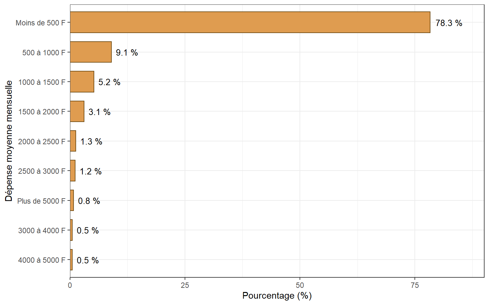
NoteInterprétation
La Figure 13 montre que la consommation journalière d’eau des ménages est assez dispersée, même si elle se concentre principalement entre 50 et 100 litres par jour. Les tranches les plus représentées sont 75 à 100 litres (16,7 %), 60 à 75 litres (15,5 %) et 50 à 60 litres (15,2 %) soit près de la moitié des ménages concernés. Il convient également de relever que 9,1 % des ménages déclarent une consommation supérieure à 500 litres par jour, ce qui traduit une forte hétérogénéité des volumes consommés, probablement liée notamment à la taille des ménages et aux différents usages de l’eau.
Au niveau de la Figure 14, les dépenses consacrées à l’eau sont très fortement concentrées dans la tranche inférieure à 500 F CFA par mois soit 78,3 % des ménages. Les ménages dépensant entre 500 et 1 000 F CFA représentent 9,1 %, puis les proportions diminuent rapidement à mesure que le montant augmente : 5,2 % dépensent entre 1 000 et 500 F CFA et seulement une faible minorité supporte des dépenses mensuelles supérieures à 2 000 F CFA. Cette faiblesse apparente des dépenses doit toutefois être interprétée au regard des modes d’approvisionnement en eau observés précédemment, notamment le recours important aux puits et autres sources qui peuvent ne pas donner lieu à un paiement monétaire régulier. Ainsi, une faible dépense ne signifie pas nécessairement une bonne accessibilité économique à un service d’eau potable, mais peut également refléter le recours à des sources gratuites ou peu coûteuses.
4.2.2.6 - Lieu de stockage de l’eau dans les ménages
| Lieu de stockage de l'eau | Effectif | Pourcentage |
|---|---|---|
| Jarre | 716 | 49.1% |
| Bidon/récipient en plastique | 412 | 28.3% |
| Tonneaux | 253 | 17.4% |
| Seaux/bassines | 56 | 3.8% |
| Sachets plastiques | 19 | 1.3% |
| Marmite | 2 | 0.1% |
NoteInterprétation
Les résultats de la Table 27 montrent que le stockage de l’eau dans les ménages repose principalement sur des récipients traditionnels ou mobiles. Près de la moitié des ménages (49,1 %) utilisent des jarres, qui constituent de loin le principal mode de stockage, suivies des bidons ou récipients en plastique (28,3 %) et des tonneaux (17,4 %). Les seaux ou bassines ne concernent que 3,8 % des ménages, tandis que l’utilisation de sachets plastiques (1,3 %) et de marmites (0,1 %) reste marginale. Cette prédominance des jarres, bidons et tonneaux montre l’importance du stockage domestique de l’eau, probablement en lien avec la nécessité de constituer des réserves pour les besoins quotidiens. Elle souligne également l’enjeu des conditions d’hygiène, de couverture et d’entretien des récipients, afin d’éviter une contamination de l’eau entre son prélèvement et sa consommation.
4.2.2.7 - Satisfaction des ménages par rapport aux besoins en eau potable
| Satisfait | Effectif | Pourcentage |
|---|---|---|
| Non | 996 | 68.3% |
| Oui | 462 | 31.7% |
| Raison d'insafisfaction | Effectif | Pourcentage |
|---|---|---|
| Mauvaise qualité de l'eau (couleur, odeur, goût) | 613 | 61.5% |
| Coupure régulière de la source d'approvisionnement | 265 | 26.6% |
| Quantité d'eau insuffisante | 41 | 4.1% |
| Vétusté des équipements/installations/canalisations | 31 | 3.1% |
| Mauvaise gestion des points d'eau | 20 | 2.0% |
| Trop grande distance à parcourir | 10 | 1.0% |
| Prix de l'eau trop élevé | 8 | 0.8% |
| Gestionnaires du services peu réatifs en cas de sollicitation | 6 | 0.6% |
| Manque ou insuffisance d'information sur le fonctionnement du service | 2 | 0.2% |
NoteInterprétation
Les résultats de la Table 28 mettent en évidence un niveau élevé d’insatisfaction des ménages vis-à-vis de leurs besoins en eau potable : 68,3 % des ménages (996) se déclarent insatisfaits, contre seulement 31,7 % (462) qui se déclarent satisfaits. Cette insatisfaction est principalement liée à la mauvaise qualité de l’eau (couleur, odeur ou goût), citée par 61,5 % des ménages insatisfaits, suivie des coupures régulières de la source d’approvisionnement (26,6 %). Les autres motifs sont nettement moins fréquents, notamment l’insuffisance de la quantité d’eau (4,1 %), la vétusté des équipements et installations (3,1 %), la mauvaise gestion des points d’eau (2,0 %) ou encore la distance à parcourir (1,0 %). Le prix de l’eau n’est cité que par 0,8 % des ménages insatisfaits. Ces résultats montrent ainsi que l’enjeu prioritaire ne semble pas être principalement financier, mais concerne surtout la qualité de l’eau et la continuité de l’approvisionnement, qui apparaissent comme les principaux facteurs limitant la satisfaction des besoins en eau potable des ménages.
4.2.3 - Accès à la santé
4.2.3.1 - Principal type de centre de santé fréquenté
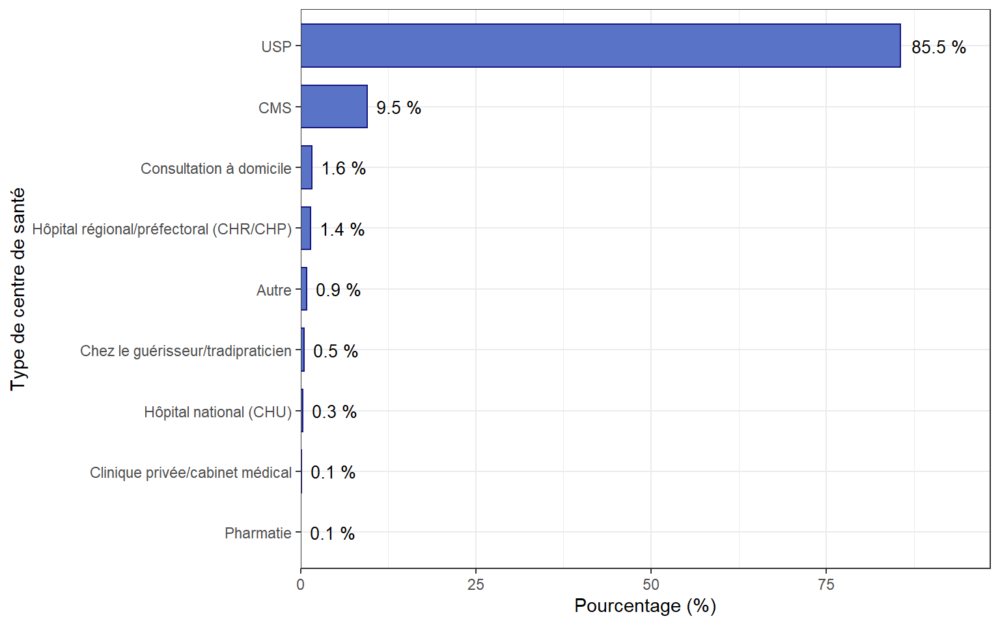
NoteInterprétation
La Figure 15 montrent une forte concentration de la fréquentation des ménages au niveau des Unités de soins périphériques (USP), qui constituent le principal type de centre de santé fréquenté pour 85,5 % des ménages enquêtés. Les Centres médico-sociaux (CMS) arrivent loin derrière avec 9,5 %, tandis que les autres structures sont très faiblement sollicitées : consultation à domicile (1,6 %), hôpitaux régionaux ou préfectoraux (CHR/CHP) (1,4 %) et autres structures (0,9 %). Les recours aux guérisseurs/tradipraticiens (0,5 %), au CHU (0,3 %), aux cliniques ou cabinets médicaux privés (0,1 %) et aux pharmacies (0,1 %) demeurent marginaux. Cette distribution met ainsi en évidence le rôle central des structures sanitaires de proximité, particulièrement des USP, dans l’accès aux soins des ménages de Tchaoudjo 2. Elle souligne par conséquent l’importance de leur disponibilité géographique, de leur capacité d’accueil, de leur dotation en personnel et équipements ainsi que de la qualité des services offerts, compte tenu de la forte dépendance des ménages à ce premier niveau de l’offre de soins.
4.2.3.2 - Personnes handicapées dans le ménage
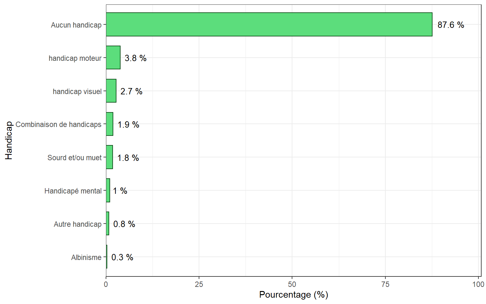
NoteInterprétation
La Figure 16 montrent que la grande majorité des ménages enquêtés (87,6 %) ne déclarent aucune personne vivant avec un handicap. À l’inverse, 12,4 % des ménages sont concernés par au moins une situation de handicap. Parmi les différentes situations recensées, le handicap moteur est le plus fréquemment déclaré (3,8 % des ménages), suivi du handicap visuel (2,7 %) et des ménages cumulant plusieurs types de handicap (1,9 %). Les situations de surdité et/ou de mutité représentent 1,8 %, tandis que le handicap mental (1,0 %), les autres formes de handicap (0,8 %) et l’albinisme (0,3 %) sont moins fréquemment rapportés. Bien que les proportions soient relativement faibles à l’échelle de l’ensemble des ménages, la présence de personnes vivant avec un handicap constitue un enjeu à prendre en compte dans la planification communale, notamment en matière d’accessibilité aux services de santé et aux autres services essentiels, d’inclusion sociale et d’adaptation des infrastructures et équipements publics.
4.2.3.3 - Auto-médication et lieu d’approvisionnement en médicaments pour le soin
| Auto médication | Effectif | Pourcentage |
|---|---|---|
| Oui | 930 | 63.9% |
| Non | 526 | 36.1% |
| Lieu d'approvisionnement en médicaments | Effectif | Pourcentage |
|---|---|---|
| Principalement dans la rue | 607 | 41.6% |
| Principalement à la pharmacie | 569 | 39.0% |
| Je les prépare moi-même principalement | 151 | 10.4% |
| Principalement chez le tradithérapeute | 121 | 8.3% |
| Autre | 10 | 0.7% |
NoteInterprétation
Les résultats mettent en évidence une forte pratique de l’automédication parmi les chefs de ménage enquêtés (Table 31): près de deux tiers (63,9 %) déclarent y avoir recours, contre 36,1 % qui ne la pratiquent pas. Cette tendance se reflète également dans les modes d’approvisionnement en médicaments. En effet, 41,6 % des chefs de ménage déclarent se procurer principalement leurs médicaments dans la rue, une proportion légèrement supérieure à celle des achats effectués principalement en pharmacie (39,0 %). Par ailleurs, 10,4 % déclarent préférer se soigner eux-mêmes, tandis que 8,3 % s’approvisionnent principalement auprès d’un tradithérapeute. Ces résultats révèlent ainsi l’importance des pratiques de soins réalisées en dehors du circuit sanitaire et pharmaceutique formel. La prédominance de l’automédication et le recours important aux médicaments vendus dans la rue constituent des enjeux de santé publique, notamment en matière de sécurisation de l’usage des médicaments, de sensibilisation des populations et d’amélioration de l’accès aux conseils et services de santé qualifiés.
4.2.3.4 - Assurance santé pour le chef de ménage et les membres du ménage
| Assurance santé | Effectif | Pourcentage |
|---|---|---|
| Non | 1263 | 86.6% |
| Oui pour moi et ma famille | 143 | 9.8% |
| Oui pour moi seul | 52 | 3.6% |
NoteInterprétation
La Table 32 met en évidence une très faible couverture des ménages par une assurance santé. En effet, 86,6 % des chefs de ménage déclarent ne disposer d’aucune assurance santé, ni pour eux-mêmes ni pour leur famille. Seulement 13,4 % bénéficient d’une couverture : 9,8 % déclarent être assurés avec les membres de leur famille, tandis que 3,6 % disposent d’une assurance uniquement pour eux-mêmes. Ainsi, une très grande majorité des ménages reste exposée à une prise en charge directe des dépenses de santé sur leurs ressources propres. Cette situation peut constituer un facteur de vulnérabilité économique, notamment pour les ménages confrontés à des dépenses de santé importantes ou imprévues, et souligne l’enjeu de l’extension des mécanismes de protection financière contre le risque maladie au profit des populations de la commune.
4.2.4 - Hygiène et assainissement
4.2.4.1 - Existence type et mode de vidance des latrines dans les ménages
| Latrine à la maison | Effectif | Pourcentage |
|---|---|---|
| Non | 1186 | 81.3% |
| Oui | 272 | 18.7% |
| Mode de vidance | Effectif | Pourcentage |
|---|---|---|
| Traditionnel | 211 | 77.6% |
| Moderne | 34 | 12.5% |
| VIP | 25 | 9.2% |
| ATPC | 1 | 0.4% |
| ECOSAN | 1 | 0.4% |
| Mode de vidance | Effectif | Pourcentage |
|---|---|---|
| Manuellement | 125 | 46.0% |
| Changement de fosse | 88 | 32.4% |
| Par camion de vidange | 53 | 19.5% |
| Jamais videngé | 5 | 1.8% |
| Traitement par des produits | 1 | 0.4% |
NoteInterprétation
Les résultats de la Table 33 mettent en évidence une faible disponibilité des latrines au niveau des ménages de Tchaoudjo 2. Sseulement 18,7 % des ménages disposent d’une latrine à domicile, contre 81,3 % qui n’en disposent pas. Cette situation traduit un déficit important en équipements d’assainissement domestique et peut favoriser le recours à des solutions alternatives de défécation, notamment l’utilisation de latrines extérieures au ménage et surtout la défécation à l’air libre. Elle constitue ainsi un enjeu majeur en matière d’hygiène, d’assainissement et de prévention des risques sanitaires.
Au niveau des ménages disposant d’une latrine (Table 34), les installations de type traditionnel sont largement prédominantes (77,6 %), tandis que les latrines modernes ne représentent que 12,5 % et les latrines VIP 9,2 %. Les dispositifs ATPC et ECOSAN restent marginaux avec 0,4 % chacun*.
Concernant la vidange (Table 35), elle est principalement effectuée manuellement (46,0 %) ou par changement de fosse (32,4 %), tandis que seulement 19,5 % des ménages concernés ont recours à un camion de vidange. Les autres pratiques sont marginales : 1,8 % déclarent que leur latrine n’a jamais été vidangée et 0,4 % utilisent un traitement par des produits. Dans l’ensemble, ces résultats montrent que les difficultés d’assainissement ne concernent pas uniquement la faible couverture en latrines, mais également la qualité des installations et les conditions de gestion des boues de vidange. Ils soulignent ainsi la nécessité d’agir simultanément sur l’amélioration de l’accès aux latrines, la promotion d’installations améliorées et la sécurisation des pratiques de vidange et de gestion des déchets issus des ouvrages d’assainissement.
4.2.4.2 - Lieu de défécation et raison de l’absence de latrine dans ménage
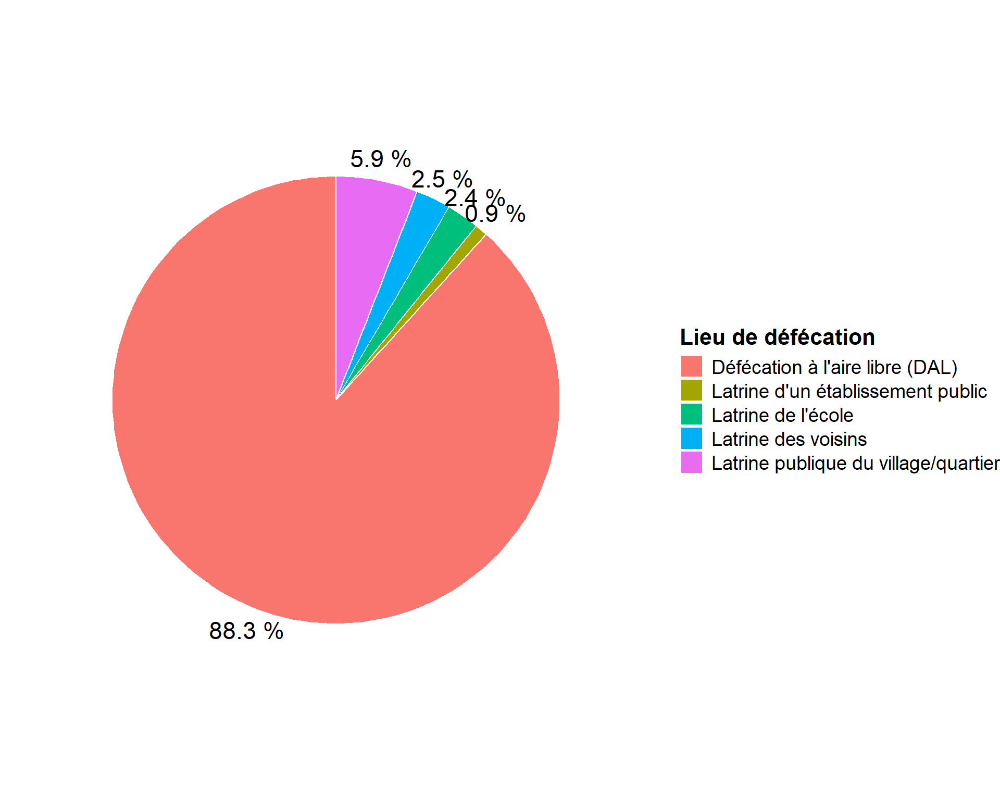
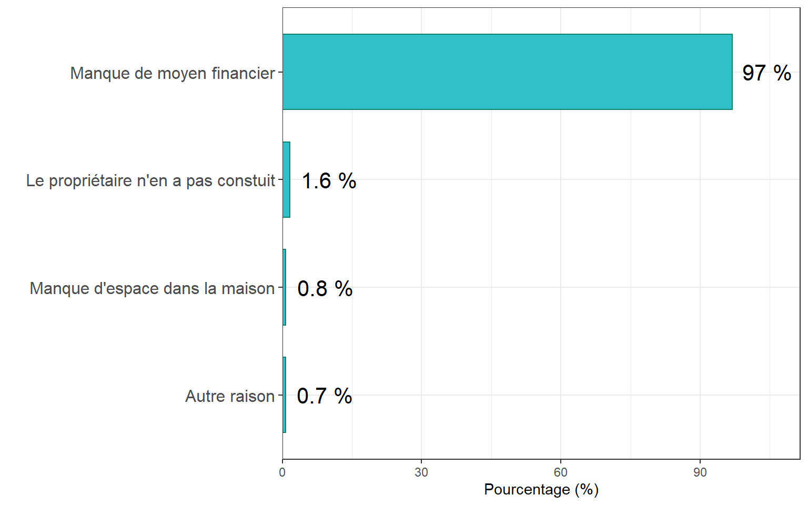
NoteInterprétation
Les Figure 17 et Figure 18 mettent en évidence une situation préoccupante en matière d’assainissement pour les ménages ne disposant pas de latrine. Parmi ceux-ci, la défécation à l’air libre (DAL) constitue de très loin la principale pratique, avec 88,3 % des ménages concernés. Les solutions alternatives restent peu utilisées : 5,9 % recourent à une latrine publique du village ou du quartier, 2,5 % à la latrine des voisins, 2,4 % à la latrine de l’école et 0,9 % à celle d’un établissement public. Ces résultats montrent que l’absence de latrine au domicile se traduit, dans la très grande majorité des cas, par un recours à la défécation à l’air libre. Cette situation constitue un enjeu important d’hygiène et d’assainissement, en raison notamment des risques de contamination de l’environnement et d’exposition des populations aux maladies liées à l’insalubrité.
L’analyse des raisons de l’absence de latrine permet d’identifier très clairement la principale contrainte : 97,0 % des ménages concernés évoquent le manque de moyens financiers. Les autres motifs sont très marginaux : le fait que le propriétaire n’ait pas construit de latrine représente 1,6 %, le manque d’espace dans la maison 0,8 % et les autres raisons 0,7 %. Ainsi, l’insuffisance d’équipements d’assainissement domestique apparaît avant tout associée, selon les déclarations des ménages, à une contrainte économique. Combiné au niveau très élevé de défécation à l’air libre parmi les ménages sans latrine, ce résultat souligne l’importance d’actions facilitant l’accès des ménages aux ouvrages d’assainissement, notamment à travers des solutions techniquement adaptées et financièrement accessibles, accompagnées d’actions de sensibilisation à l’hygiène et à l’utilisation durable des latrines.
4.2.4.3 - Existence et type de douche dans le ménage
| Existence de douche | Effectif | Pourcentage |
|---|---|---|
| Oui | 1291 | 88.5% |
| Non | 167 | 11.5% |
| Types de douche | Effectif | Pourcentage |
|---|---|---|
| Douche traditionnelle (en paille, tôle, feuilles) | 1100 | 85.2% |
| Douche construit en dur (briques) | 191 | 14.8% |
4.2.4.4 - Lieu de douche des ménages qui n’en possède pas
| Lieu de douche | Effectif | Pourcentage |
|---|---|---|
| Douche des voisins | 79 | 47.3% |
| A l'air libre | 57 | 34.1% |
| Douche publique du village/quartier | 28 | 16.8% |
| Douche de l'école | 3 | 1.8% |
NoteInterprétation
La Table 36 montre que 88,5 % des ménages disposent d’un espace de douche, contre 11,5 % qui n’en possèdent pas. Toutefois, la Table 37 montre que la disponibilité d’une douche ne signifie pas nécessairement l’existence d’une installation améliorée : parmi les ménages équipés, 85,2 % disposent d’une douche traditionnelle, réalisée notamment en paille, tôle ou feuilles, tandis que seulement 14,8 % possèdent une douche construite en dur (briques). Ainsi, si l’accès à un espace dédié à la toilette corporelle est relativement répandu, la prédominance des installations traditionnelles met en évidence un niveau encore limité d’amélioration des équipements sanitaires domestiques.
La situation des 11,5 % de ménages ne disposant pas de douche révèle par ailleurs des pratiques alternatives qui peuvent poser des enjeux de confort, d’intimité et d’hygiène. Près de la moitié d’entre eux (47,3 %) utilisent la douche des voisins, tandis que 34,1 % se lavent à l’air libre. Les douches publiques du village ou du quartier sont utilisées par 16,8 %, contre seulement 1,8 % pour les douches des écoles. Ces résultats montrent les principaux défis ne concernent pas seulement la disponibilité des espaces de douche, mais également la qualité et la durabilité des installations existantes ainsi que l’accès à des espaces de toilette adéquats pour les ménages non équipés.
4.2.4.5 - Mode d’évacuation des eaux usées et lieu de dépotoirs des ménages
| Mode d'évacuation | Effectif | Pourcentage |
|---|---|---|
| Dans la rue | 1358 | 93.1412894 |
| Dans le caniveau/rigole | 64 | 4.3895748 |
| Dans un puisard | 25 | 1.7146776 |
| Dans la brousse | 11 | 0.7544582 |
| Lieu de dépotoir | Effectif | Pourcentage |
|---|---|---|
| Dans un dépotoir à côté (dépotoir sauvage) | 1439 | 98.7% |
| Dans un dépotoir officiel ou aménagé | 16 | 1.1% |
| Abonné à un service de pré-collecte | 2 | 0.1% |
| Ordures brûlées | 1 | 0.1% |
NoteInterprétation
Les résultats da la Table 39 mettent en évidence que la quasi-totalité des ménages (93,1 %) déclare rejeter les eaux usées directement dans la rue, tandis que 4,4 % les évacuent dans les caniveaux ou rigoles. Seulement 1,7 % utilisent un puisard, alors que 0,8 % les rejettent dans la brousse. Cette situation contribue à la stagnation des eaux, à l’insalubrité du cadre de vie, aux ristques de développement de larves de moustiques et à la dégradation des conditions d’hygiène.
La gestion des ordures ménagères présente une situation tout aussi préoccupante (Table 40) : 98,7 % des ménages déclarent déposer leurs déchets dans un dépotoir sauvage à proximité, contre seulement 1,1 % qui utilisent un dépotoir officiel ou aménagé. Le recours à un service de pré-collecte reste quasiment inexistant (0,1 %). Le reste des ménages (0,1 %) brûlent leurs ordures. Ces résultats traduisent une faible structuration du système de collecte et d’évacuation des déchets solides La combinaison du rejet massif des eaux usées dans les rues et de l’utilisation généralisée des dépotoirs sauvages constitue donc un enjeu majeur d’assainissement pour la commune, appelant notamment au développement de solutions adaptées de drainage des eaux usées, à l’aménagement de points de regroupement ou de dépotoirs contrôlés et à l’organisation progressive de services de collecte ou de pré-collecte des déchets.
4.2.5 - Caractéristiques de l’habitat
4.2.5.1 - Statut d’occupation du logement et type de documents de propriété
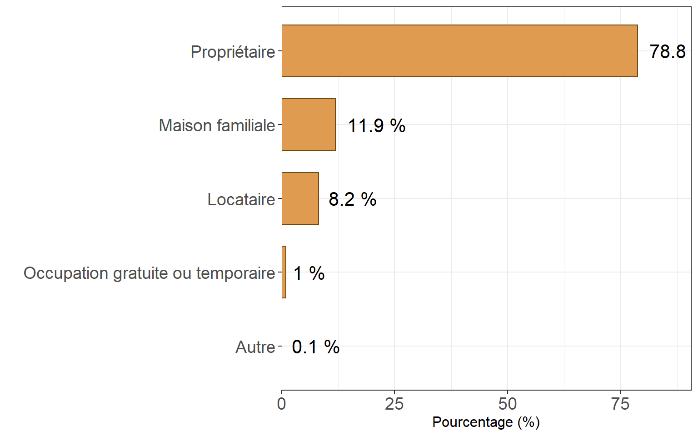
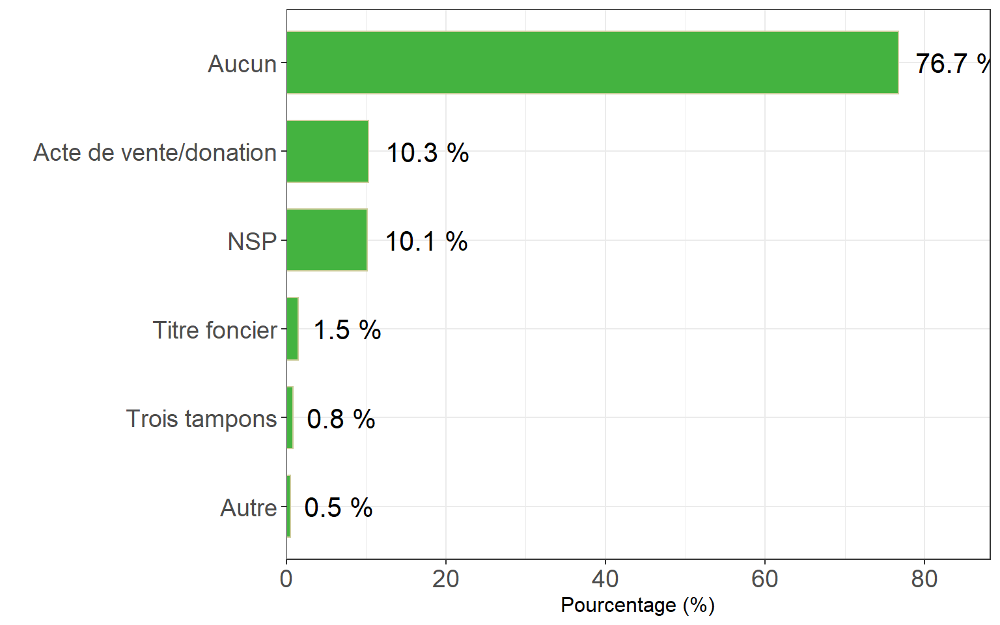
NoteInterprétation
4.2.6 Interprétation
Les résultats montrent une forte prédominance de la propriété du logement parmi les ménages enquêtés (fig-statut-occupation) : 78,8 %** déclarent être propriétaires de leur habitation. À cette proportion s’ajoutent 11,9 % de ménages vivant dans une maison familiale, ce qui indique que plus de neuf ménages sur dix occupent un logement relevant de leur patrimoine propre ou familial. La location reste relativement peu répandue, concernant seulement 8,2 % des ménages, tandis que l’occupation gratuite ou temporaire représente 1,0 %. Cette structure traduit ainsi une forte stabilité résidentielle des ménages et un faible poids du marché locatif. .
4.2.6.1 - Mode d’acquisition du terrain et de l’immeuble
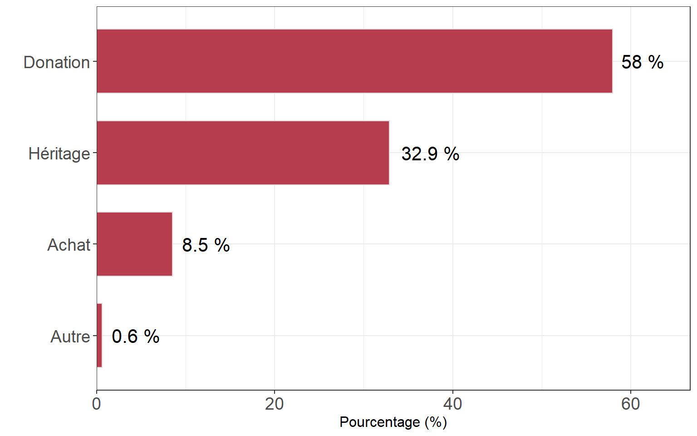
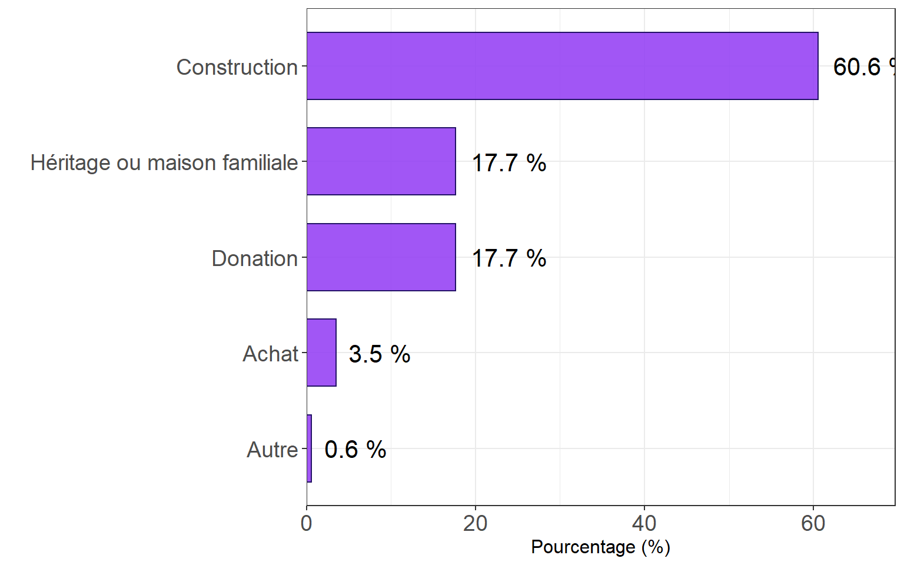
NoteInterprétatin
Les résultats de la Figure 21 montrent que les modes d’acquisition du terrain et de l’immeuble reposent principalement sur des mécanismes non marchands et familiaux. Concernant le terrain, la donation constitue de loin le principal mode d’acquisition (58,0 %), suivie de l’héritage (32,9 %). L’achat ne concerne que 8,5 % des ménages, tandis que les autres modes restent marginaux (0,6 %). Ainsi, plus de neuf terrains sur dix sont acquis par donation ou héritage, ce qui traduit l’importance des mécanismes de transmission familiale ou patrimoniale dans l’accès au foncier.
Pour l’immeuble (Figure 22), la situation est différente : 60,6 % des ménages concernés déclarent avoir construit leur logement, ce qui constitue le principal mode d’acquisition. L’héritage ou la maison familiale et la donation représentent chacun 17,7 %, tandis que l’achat direct d’un immeuble demeure faible (3,5 %) et les autres modes représentent0,6 %`. La faible place des transactions marchandes dans l’acquisition des terrains et des immeubles traduit ainsi un marché immobilier relativement limité.
4.2.6.2 - Type d’habitation et fonction du logement
| Type d'habitation | Effectif | Pourcentage |
|---|---|---|
| Maison individuelle | 919 | 63.0% |
| Cour commune | 539 | 37.0% |
| Fonction du logement | Effectif | Pourcentage |
|---|---|---|
| Résidentielle | 1378 | 94.5% |
| Economique (location, bail) | 65 | 4.5% |
| Résidentielle et économique | 15 | 1.0% |
NoteInterprétation
Les résultats des Table 41 et Table 42 montrent que les conditions d’habitation des ménages de Tchaoudjo 2 sont caractérisées par une prédominance de la maison individuelle, qui concerne 63,0 % des ménages, contre 37,0 % vivant dans une cour commune. Cette configuration traduit une présence importante de logements autonomes, même si plus d’un tiers des ménages évoluent encore dans des espaces résidentiels partagés. Concernant la fonction du logement, celle-ci est très largement résidentielle (94,5 %), tandis que seulement 4,5 % des logements ont une fonction exclusivement économique, notamment à travers la location ou le bail, et 1,0 % combinent fonctions résidentielle et économique. Le logement apparaît ainsi avant tout comme un espace d’habitation des ménages, les usages économiques ou mixtes demeurant relativement marginaux.
4.2.6.3 - Type et caractéristiques du logement
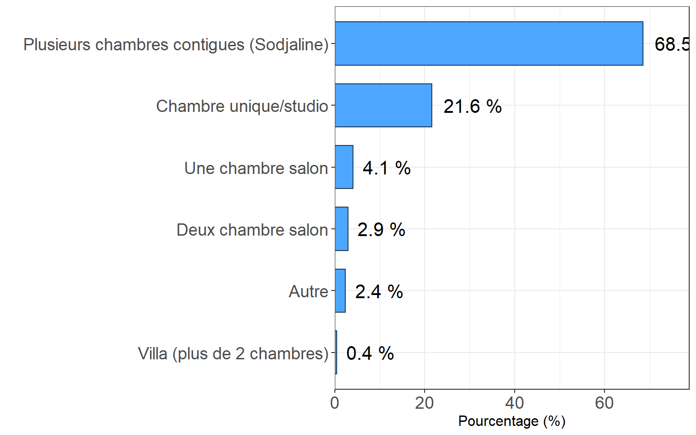
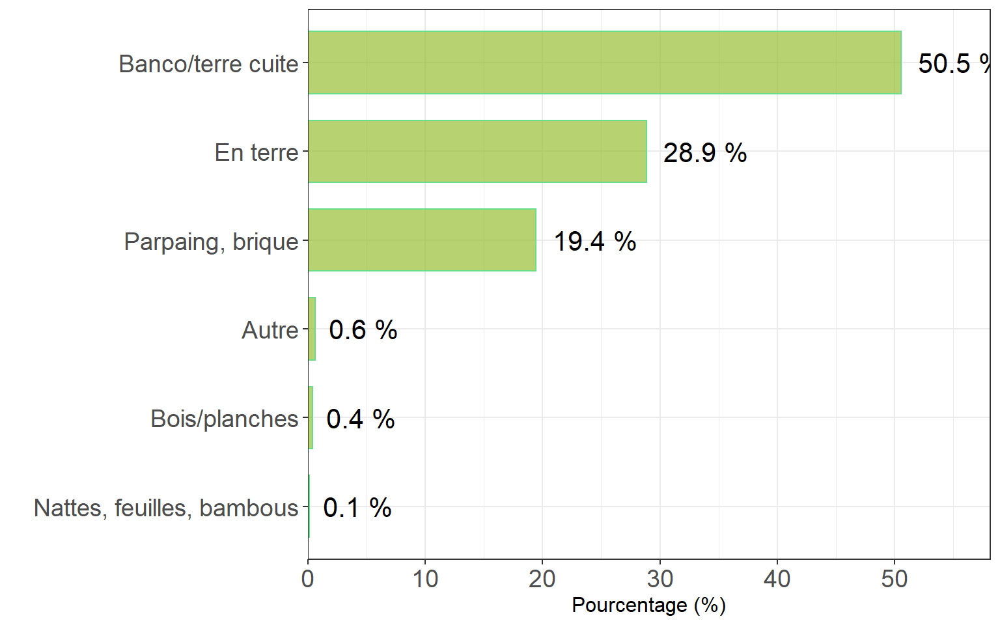
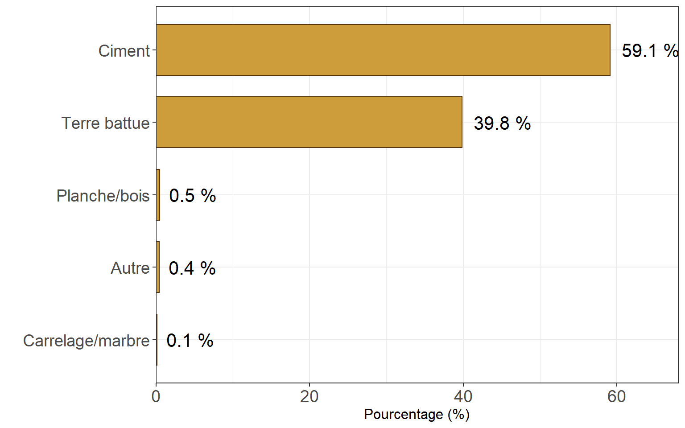
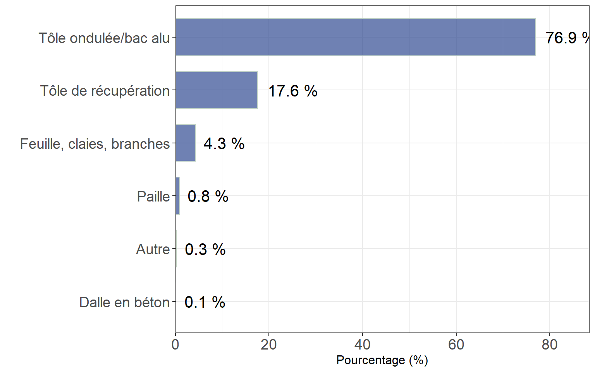
NoteInterprétatin
Comme le montre la Figure 23, les caractéristiques des logements mettent en évidence un habitat dominé par des formes relativement simples, avec toutefois une présence importante de matériaux durables. Le type de logement (Figure 23 (a)) est dominté par une configuration de plusieurs chambres contigues “Sodjaline” ou séparées (68,5 %), devant les chambres uniques ou studios (21,6 %), tandis que les autres configurations restent peu représentées.
Concernant la nature des matériaux de construction (Figure 23 (b)), 50,5 % des logements ont des murs en banco ou terre cuite, auxquels s’ajoutent 28,9 % de murs en terre, contre seulement 19,4 % en parpaings ou briques, ce qui traduit une forte utilisation des matériaux locaux. Pour le sol (Figure 23 (c)), le ciment prédomine avec 59,1 %, mais une proportion encore importante de logements conserve un sol en terre battue (39,8 %). Enfin (Figure 23 (d)), les toitures sont majoritairement réalisées en tôle ondulée ou bac aluminium (76,9 %), tandis que 17,6 % utilisent des tôles de récupération et 4,3 % des feuilles, claies ou branches.
Dans l’ensemble, ces résultats font apparaître un habitat combinant des éléments de modernisation, notamment à travers la prédominance des sols cimentés et des couvertures en tôle, avec le maintien de modes constructifs traditionnels, particulièrement pour les murs. La proportion importante de sols en terre battue, de murs en terre et, dans une moindre mesure, de couvertures réalisées avec des matériaux précaires surtout dans l’espace rural constitue également un indicateur à prendre en compte dans l’analyse de la qualité et de la vulnérabilité des logements.
4.2.6.4 - Conflits fonciers et leur résolution
| Conflit foncier | Effectif | Pourcentage |
|---|---|---|
| Non | 1111 | 76.2% |
| NSP | 300 | 20.6% |
| Oui | 47 | 3.2% |
| Avec qui ? | Effectif | Pourcentage |
|---|---|---|
| Famille | 17 | 36.2% |
| Collectivité | 16 | 34.0% |
| Autre | 10 | 21.3% |
| Commune | 4 | 8.5% |
| Conflit résolu | Effectif | Pourcentage |
|---|---|---|
| Non | 19 | 40.4% |
| Oui | 17 | 36.2% |
| En cours | 11 | 23.4% |
NoteInterprétation
Les résultats montrent que les conflits fonciers déclarés restent relativement peu fréquents parmi les ménages enquêtés : 3,2 % (47 ménages) déclarent avoir connu un conflit foncier, contre 76,2 % qui indiquent ne pas en avoir connu (Table 43). Il convient toutefois de relever la proportion importante de réponses « Ne sais pas (NSP) » (20,6 %). Cette non-réponse peut traduire une méconnaissance de la situation foncière du ménage ou une réticence à se prononcer sur une question potentiellement sensible.
Parmi les 47 ménages ayant déclaré un conflit, ceux-ci opposent principalement le ménage à des membres de la famille (36,2 %) ou à la collectivité familiale (34,0 %) ; les autres parties représentent 21,3 %, tandis que les conflits avec la commune (8,5 %) sont moins fréquents comme le montre la Table 44. Le poids cumulé de la famille et de la collectivité (70,2 %**) suggère ainsi que les différends déclarés s’inscrivent principalement dans les rapports familiaux et communautaires liés au foncier. La résolution de ces conflits apparaît par ailleurs mitigée.
La Table 45 montre que sur les 47 cas déclarés, 36,2 % ont été résolus, tandis que 40,4 % ne l’ont pas été et 23,4 % sont encore en cours de résolution. Ainsi, près des deux tiers des conflits déclarés (63,8 %) ne sont pas encore définitivement réglés au moment de l’enquête.
Bien que le nombre de cas concernés reste limité, cette situation met en évidence des enjeux de sécurisation foncière, de prévention et de médiation des différends, particulièrement au niveau familial et communautaire. Dans une perspective de planification communale, ces résultats plaident notamment pour le renforcement des mécanismes locaux d’information sur les droits fonciers, de documentation et de sécurisation des transactions et transmissions foncières, ainsi que des dispositifs de médiation associant les acteurs communautaires et les institutions compétentes.
4.2.7 - Accès à l’énergie et à l’électricité
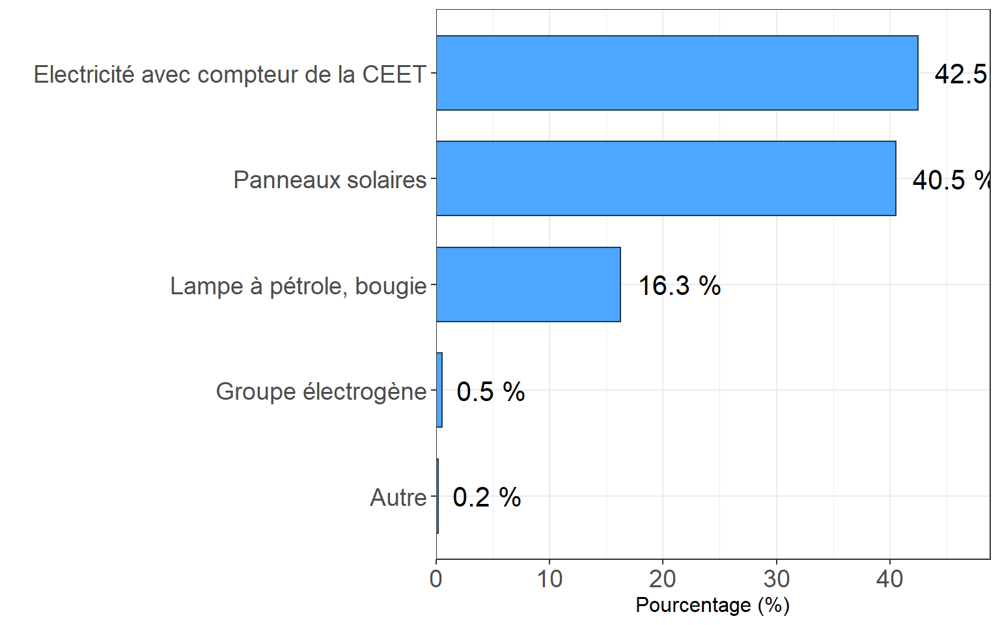
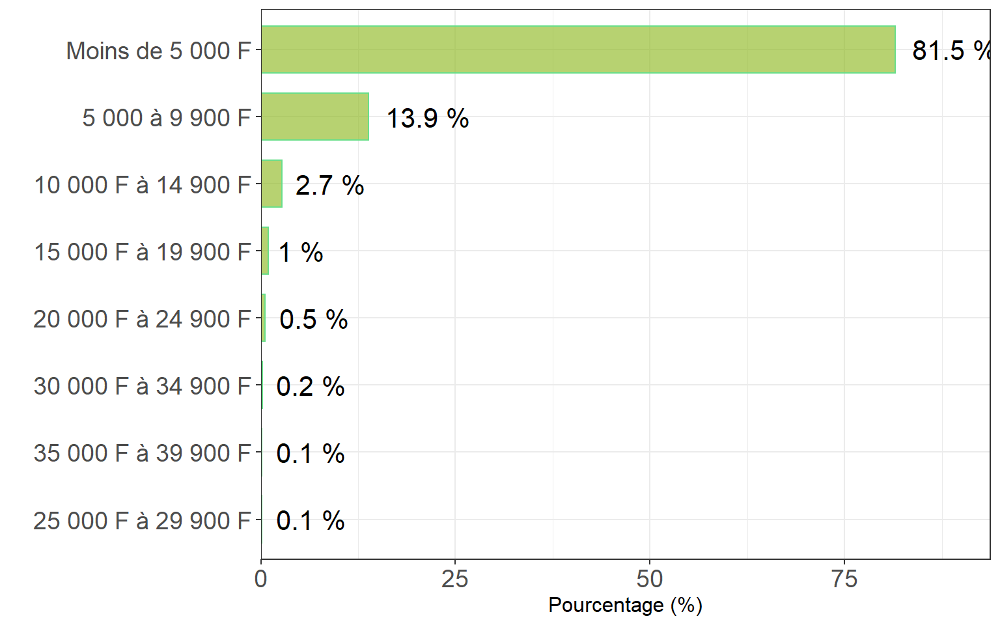
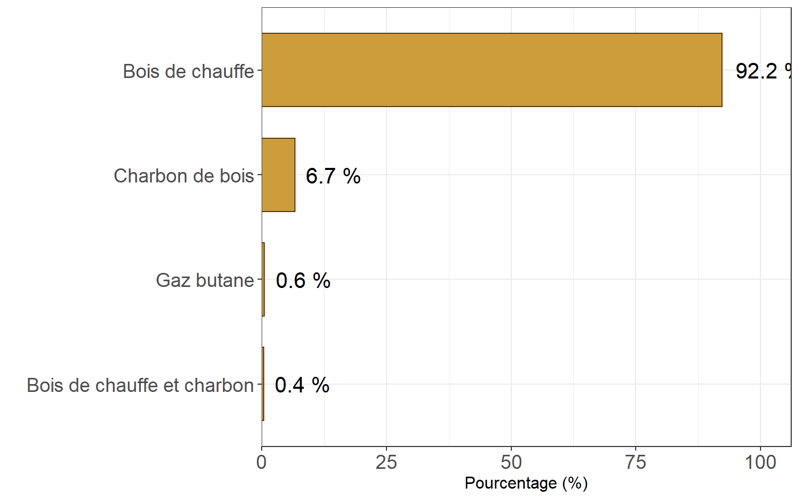
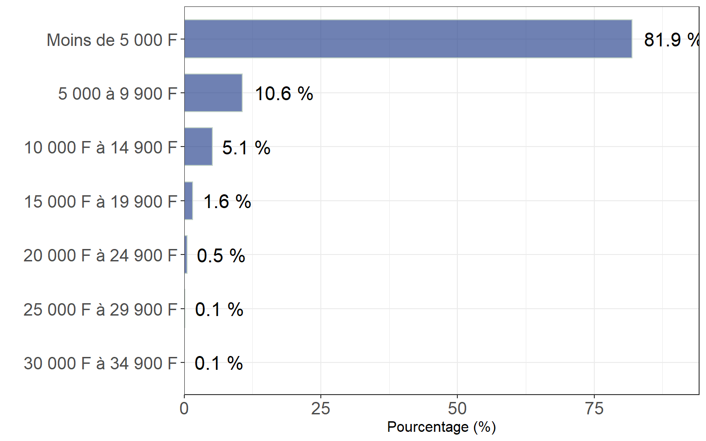
NoteInterprétation
Il est observé une situation relativement favorable en matière d’accès à une source moderne d’éclairage, mais caractérisée par une forte complémentarité entre le réseau électrique conventionnel et l’énergie solaire (Figure 24 (a)). L’électricité fournie par la CEET concerne 42,5 % des ménages, tandis que les panneaux solaires représentent 40,5 %. Ainsi, ces deux sources assurent à elles seules l’éclairage de 83,0 % des ménages, avec une contribution du solaire presque équivalente à celle du réseau électrique. Cette situation témoigne du rôle majeur joué par les solutions solaires dans l’électrification des ménages, notamment comme alternative au réseau conventionnel. Néanmoins, une fraction des ménages reste dépendante de sources d’éclairage plus rudimentaires, principalement les lampes à pétrole ou bougies (9,1 %) et les lampes torches (7,2 %), alors que les groupes électrogènes restent marginaux (0,5 %).
Les dépenses mensuelles consacrées à l’électricité apparaissent globalement faibles (Figure 24 (b)) : 81,5 % des ménages concernés dépensent moins de 5 000 FCFA par mois et 13,9 % entre 5 000 et 9 900 FCFA. Les dépenses égales ou supérieures à 10 000 FCFA ne concernent donc qu’une faible proportion des ménages. Ce profil doit toutefois être interprété en tenant compte de la forte présence du solaire dans les sources d’éclairage.
En revanche, la situation est très différente pour l’énergie de cuisson, qui reste presque entièrement dépendante de la biomasse (Figure 24 (c)). Le bois de chauffe est utilisé par 92,2 % des ménages, auquel s’ajoutent 6,7 % utilisant le charbon de bois et 0,4 % combinant bois et charbon. Le gaz butane ne représente que 0,6 %. Cette très forte dépendance aux combustibles ligneux constitue un enjeu important pour la commune, tant en matière de pression sur les ressources forestières que de transition vers des modes de cuisson plus propres. Elle est particulièrement pertinente à considérer dans la planification territoriale au regard des problématiques de gestion durable des ressources naturelles et de restauration des paysages.
Enfin, la @(Figure 24 (d)) montre que les dépenses mensuelles consacrées à l’énergie de cuisson sont également concentrées dans les tranches inférieures. 81,9 % des ménages dépensent moins de 5 000 FCFA par mois, contre 10,6 % entre 5 000 et 9 900 FCFA et 5,1 % entre 10 000 et 14 900 FCFA.
Dans l’ensemble, les résultats révèlent donc un double profil énergétique : une diversification relativement importante des solutions d’éclairage, portée notamment par le solaire, mais une transition énergétique encore très limitée pour la cuisson, qui demeure fortement tributaire du bois-énergie. Les principaux enjeux concernent ainsi la poursuite de l’accès à une électricité fiable et abordable, particulièrement dans les zones insuffisamment desservies par le réseau, ainsi que la promotion progressive de solutions de cuisson plus efficaces et moins dépendantes des ressources forestières.
4.2.8 - Environnement, changement climatique et ressources forestières
4.2.8.1 - Problèmes d’inondation vécu par les ménages
| Problème d'inondation | Effectif | Pourcentage |
|---|---|---|
| Non | 1283 | 88.0% |
| Oui | 175 | 12.0% |
NoteInterprétation
Les résultats montrent que la grande majorité des ménages enquêtés dans la commune de Tchaoudjo 2 (88,0 %) déclarent ne pas être confrontés à des problèmes d’inondation, contre 12,0 % (175 ménages) qui affirment en subir. Bien que cette proportion reste relativement limitée, elle révèle l’existence de situations de vulnérabilité aux inondations susceptibles d’affecter les habitations, les biens des ménages, les infrastructures et les conditions de vie des populations concernées. Ces résultats soulignent ainsi la nécessité d’identifier les localités et les zones les plus exposées afin d’orienter les interventions communales en matière de prévention des risques d’inondation, d’amélioration du drainage des eaux pluviales et d’aménagement du territoire.
4.2.8.2 - Effets du changement climatique perçus par les ménages
| Dommage d'inondation | Effectif | Pourcentage |
|---|---|---|
| Combinaison de plusieurs effets | 619 | 42.5% |
| RAS | 604 | 41.4% |
| Irrégularité des pluies | 128 | 8.8% |
| Les vents violents | 65 | 4.5% |
| L'érosion des sols | 16 | 1.1% |
| Inondations | 14 | 1.0% |
| Fortes chaleur | 10 | 0.7% |
| Poches de sécheresse | 2 | 0.1% |
NoteInterprétation
La Table 47 montre que 42,5 % des ménages déclarent avoir observé une combinaison de plusieurs phénomènes dus aux changements climatiques, notamment l’irrégularité des pluies, les fortes chaleurs, les poches de sécheresse, les vents violents, les inondations et l’érosion des sols. Parmi les phénomènes signalés isolément, l’irrégularité des pluies arrive en tête (8,8 %), suivie des vents violents (4,5 %), de l’érosion des sols (1,1 %), des inondations (1,0 %), des fortes chaleurs (0,7 %) et des poches de sécheresse (0,1 %). Toutefois, une proportion importante des ménages (41,4 %) déclare n’avoir constaté aucun phénomène particulier (RAS).
Ces résultats mettent en évidence une perception contrastée des manifestations du changement climatique, mais révèlent surtout que les ménages qui signalent des changements sont davantage confrontés à une combinaison de phénomènes qu’à des manifestations isolées. Dans une commune où les activités agricoles occupent une place prépondérante, ces perturbations climatiques perçues constituent des facteurs potentiels de vulnérabilité pour les systèmes de production, les ressources naturelles et les moyens de subsistance des populations. Elles soulignent ainsi l’importance d’intégrer l’adaptation au changement climatique, la gestion durable des terres, la conservation des eaux et des sols ainsi que la restauration des paysages forestiers dans les orientations stratégiques du Plan de développement communal.
4.2.8.3 - Exploitation du bois et carbonisation
| Exploitation du bois | Effectif | Pourcentage |
|---|---|---|
| Oui | 894 | 61.3% |
| Non | 564 | 38.7% |
| But de l'exploitation du bois | Effectif | Pourcentage |
|---|---|---|
| Pour un usage domestique (cuisson, transformation, ...) | 811 | 90.7% |
| Pour un usage commercial | 83 | 9.3% |
| Carbonisation du bois | Effectif | Pourcentage |
|---|---|---|
| Non | 1165 | 79.9% |
| Oui | 293 | 20.1% |
| Reboisement | Effectif | Pourcentage |
|---|---|---|
| Non | 1027 | 70.4% |
| Oui | 431 | 29.6% |
NoteInterprétation
Les résultats des Table 48 et Table 49 mettent en évidence une forte dépendance des populations aux ressources ligneuses, notamment pour la satisfaction des besoins énergétiques domestiques. En effet, 61,3 % des ménages déclarent exploiter le bois, contre 38,7 % qui ne le font pas. Parmi les ménages exploitant cette ressource, 90,7 % l’utilisent principalement à des fins domestiques, notamment pour la cuisson et la transformation des produits, tandis que 9,3 % l’exploitent à des fins commerciales. Cette prédominance de l’usage domestique confirme l’importance du bois dans les conditions de vie des populations et rejoint les résultats précédents sur les sources d’énergie de cuisson, selon lesquels 92,2 % des ménages utilisent principalement le bois de chauffe. Elle suggère que les besoins énergétiques domestiques constituent un facteur important de sollicitation des ressources forestières, même si l’utilisation du bois de chauffe n’implique pas nécessairement son exploitation directe par les ménages.
Par ailleurs selon la Table 50, 20,1 % des ménages déclarent pratiquer la carbonisation du bois pour produire du charbon, contre 79,9 % qui ne s’y adonnent pas. Cette activité constitue une autre forme de valorisation des ressources ligneuses, susceptible de contribuer aux moyens de subsistance des ménages, mais également d’accentuer la pression sur les ressources forestières lorsque les prélèvements ne sont pas compensés par une gestion durable.
NoteInterprétation
En matière de restauration des ressources forestières, les résultats de la Table 51 révèlent que seulement 29,6 % des ménages déclarent pratiquer le reboisement, contre 70,4 % qui n’y participent pas. Ce faible niveau de participation contraste avec l’importance de l’exploitation du bois et des besoins énergétiques domestiques. À titre de comparaison, la proportion de ménages déclarant exploiter le bois (61,3 %) est plus de deux fois supérieure à celle des ménages pratiquant le reboisement (29,6 %). Cette différence suggère un déséquilibre potentiel entre les pratiques de prélèvement et les initiatives de renouvellement des ressources ligneuses. Toutefois, elle ne permet pas, à elle seule, de conclure à un déficit effectif de régénération forestière, qui dépend également des quantités de bois prélevées, des superficies reboisées, du taux de survie des plants et de la régénération naturelle.
Dans l’ensemble, ces résultats mettent en évidence un enjeu majeur de gestion durable des ressources forestières dans la commune de Tchaoudjo 2. Ils soulignent la nécessité de concilier les besoins énergétiques et économiques des ménages avec la préservation du couvert végétal, notamment à travers la promotion de foyers améliorés, le développement de solutions alternatives de cuisson, l’agroforesterie, la régénération naturelle assistée et le renforcement des initiatives communautaires de reboisement. Ces orientations s’inscrivent directement dans la perspective de restauration des paysages forestiers, qui constitue une priorité transversale du développement communal.
4.2.9 - Transport et mobilité
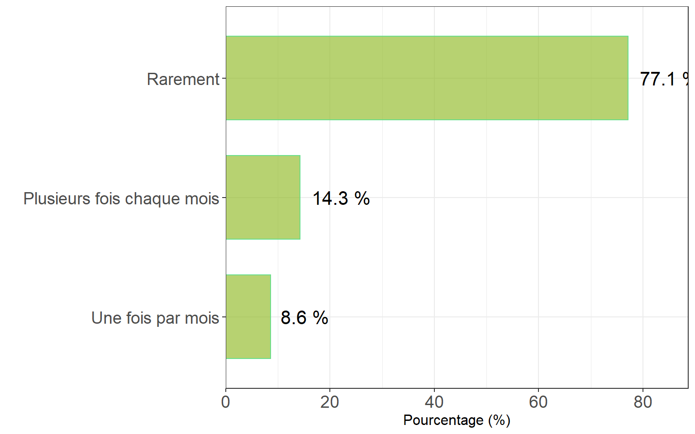
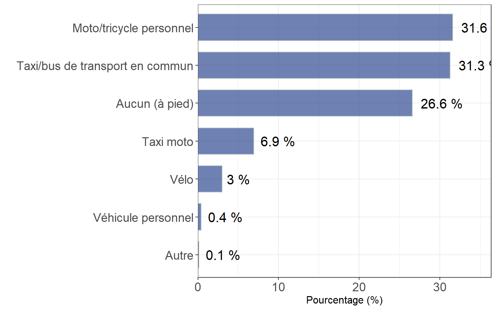
| Coût moyen mensuel | Effectif | Pourcentage |
|---|---|---|
| Moins de 500 F | 339 | 23.3% |
| 1 500 à 2 000 F | 186 | 12.8% |
| 2 000 à 3 000 F | 170 | 11.7% |
| 7 500 à 10 000 F | 110 | 7.5% |
| 1 000 à 1 500 F | 107 | 7.3% |
| 3 000 à 4 000 F | 107 | 7.3% |
| 4 000 à 5 000 F | 103 | 7.1% |
| 5 000 à 7 500 F | 95 | 6.5% |
| 500 à 1 000 F | 85 | 5.8% |
| 10000 à 15000 F | 74 | 5.1% |
| 15 000 à 20 000 F | 42 | 2.9% |
| Plus de 20 000 F | 40 | 2.7% |
NoteInterprétation
Les résultats mettent en évidence une mobilité relativement peu fréquente (Figure 25 (a)), une prédominance des moyens de transport motorisés à deux ou trois roues et des transports collectifs (Figure 25 (b)), ainsi qu’une forte disparité des dépenses mensuelles de déplacement Table 52.
En matière de fréquence des déplacements, les données montrent que la grande majorité des ménages (77,1 %) déclare se déplacer rarement, contre 14,3 % qui effectuent plusieurs déplacements par mois et 8,6 % qui se déplacent une fois par mois. Cette situation traduit une mobilité déclarée globalement limitée, qui pourrait être liée à plusieurs facteurs, notamment la dispersion géographique des localités, l’état des infrastructures routières, la disponibilité des moyens de transport et les contraintes financières des ménages. Elle refléte également la prédominance des activités agricoles et des occupations exercées à proximité des lieux de résidence.
Concernant les moyens de transport utilisés, les motos et tricycles personnels constituent le premier mode de déplacement (31,6 %), suivis de très près par les taxis et bus de transport en commun (31,3 %). Ces deux catégories représentent ensemble 62,9 % des réponses, ce qui témoigne de l’importance des moyens de transport motorisés dans la mobilité des populations. Par ailleurs, 26,6 % des chefs de ménage déclarent se déplacer à pied, une proportion relativement importante qui pourrait traduire des déplacements de proximité, mais également des difficultés d’accès aux moyens de transport motorisés. Le recours aux taxis-motos représente 6,9 %, tandis que l’utilisation du vélo (3,0 %) et des véhicules personnels (0,4 %) demeure marginale.
S’agissant du coût mensuel des déplacements, les résultats révèlent une forte concentration des ménages dans les tranches de dépenses relativement faibles. En effet, 23,3 % des ménages consacrent moins de 500 FCFA par mois au transport, tandis que 12,8 % dépensent entre 1 500 et 2 000 FCFA et 11,7 % entre 2 000 et 3 000 FCFA. À l’inverse, les dépenses plus élevées concernent une proportion limitée des ménages : 5,1 % consacrent entre 10 000 et 15 000 FCFA par mois au transport, 2,9 % entre 15 000 et 20 000 FCFA et 2,7 % plus de 20 000 FCFA.
La prédominance des faibles dépenses pourrait s’expliquer en partie par la fréquence limitée des déplacements et le recours à la marche, sans pour autant signifier que les besoins de mobilité sont pleinement satisfaits. En effet, des dépenses faibles peuvent également traduire une mobilité contrainte par l’insuffisance des revenus ou par la difficulté d’accès aux services de transport.
L’analyse croisée de ces trois dimensions fait ressortir une relation descriptive cohérente entre la faible fréquence des déplacements. Elle suggère que les conditions économiques et l’accessibilité des transports pourraient influencer les pratiques de mobilité des ménages. Dans l’ensemble, ces résultats mettent en évidence l’enjeu de l’amélioration de l’accessibilité et de la mobilité des personnes dans la commune de Tchaoudjo 2. Dans un territoire caractérisé par la dispersion des localités et les difficultés de praticabilité de certaines pistes rurales, notamment en saison des pluies, le développement des infrastructures de transport constitue un levier essentiel pour faciliter l’accès des populations aux marchés, aux services de santé, aux établissements scolaires et aux autres services socioéconomiques.
5 - Conclusion générale
L’élaboration du Plan de développement communal (PDC) de Tchaoudjo 2 s’inscrit dans un contexte marqué par la nécessité de renforcer la planification territoriale et de promouvoir un développement local inclusif, durable et fondé sur une connaissance approfondie des réalités socioéconomiques des populations locales. Dans cette perspective, la disponibilité de données fiables sur les caractéristiques démographiques des ménages, leurs conditions de vie, leurs activités économiques, leur accès aux services sociaux de base et leur environnement constitue un préalable essentiel à la définition de politiques publiques locales pertinentes. C’est dans ce cadre qu’une enquête auprès des ménages a été réalisée afin de disposer d’une base d’informations actualisées permettant d’identifier les acquis, les disparités territoriales, les vulnérabilités et les besoins prioritaires de la population communale.
Sur le plan méthodologique, l’étude a reposé sur une approche quantitative fondée sur une enquête structurée auprès de 1 458 ménages, répartis dans les quatre zones géographiques de la commune : Nord-Est, Nord-Ouest, Sud-Est et Sud-Ouest. La collecte des données, réalisée à l’aide de l’outil numérique KoboCollect, a couvert les principales dimensions des conditions de vie des ménages, notamment les caractéristiques sociodémographiques, l’éducation, la santé, l’accès à l’eau potable, l’hygiène et l’assainissement, l’habitat, l’emploi et les revenus, l’énergie, le transport et la mobilité ainsi que l’environnement et les changements climatiques. Les données recueillies ont fait l’objet de traitements statistiques descriptifs et, pour certaines variables, d’analyses bivariées et de tests statistiques permettant d’examiner les différences et les associations entre les caractéristiques des ménages. Cette démarche présente l’avantage de compléter les données administratives et les statistiques officielles par des informations directement collectées auprès des populations, tout en offrant une lecture territorialisée de leurs conditions de vie.
Les résultats mettent en évidence une population caractérisée par une forte dépendance aux activités économiques rurales, des capacités financières limitées et des inégalités d’accès aux services essentiels. Sur le plan sociodémographique, les ménages sont majoritairement dirigés par des hommes (75,7 %), contre 24,3 % par des femmes. Le nombre de personnes à charge est relativement élevé, avec un nombre médian de 5 personnes par ménage, ce qui peut accentuer les contraintes économiques, notamment dans les familles disposant de revenus modestes ou irréguliers. Les résultats révèlent également des disparités entre les hommes et les femmes en matière d’instruction, soulignant la persistance de certaines inégalités socioéducatives. Ces caractéristiques constituent des facteurs importants à prendre en compte dans la conception des interventions communales, particulièrement en faveur des femmes, des enfants, des jeunes et des ménages les plus vulnérables.
Sur le plan économique, l’étude confirme la prédominance du secteur primaire, notamment l’agriculture, qui représente 46,5 % des principales activités professionnelles déclarées. Cette situation traduit le caractère essentiellement rural de l’économie communale et sa forte dépendance aux ressources naturelles ainsi qu’aux conditions climatiques. Parallèlement, les résultats font ressortir une précarité économique importante : 53,7 % des chefs de ménages actifs déclarent ne disposer d’aucun revenu dans la classification retenue par l’enquête, tandis que 30,1 % se situent dans une tranche de revenu inférieure à 52 500 FCFA. En outre, 63,6 % des ménages déclarent éprouver des difficultés à satisfaire leurs besoins essentiels. Ces constats soulignent la faiblesse des capacités économiques d’une partie importante de la population et la nécessité de renforcer les opportunités de création de revenus, de diversification des activités économiques et de développement des chaînes de valeur agricoles. Elles mettent également en évidence l’importance de soutenir l’entrepreneuriat local, la transformation agroalimentaire, les activités génératrices de revenus et l’insertion économique des femmes et des jeunes.
En matière d’accès aux services sociaux de base, les résultats révèlent des avancées, mais également des insuffisances structurelles importantes. Dans le secteur de l’eau potable, 64,1 % des ménages ne disposent pas d’un point d’eau à domicile, tandis que l’approvisionnement repose principalement sur les puits, les forages et les pompes à motricité humaine. La distance à parcourir pour accéder à l’eau varie sensiblement selon les zones géographiques, avec des situations particulièrement contraignantes dans certaines localités. Par ailleurs, 64,7 % des ménages estiment que leurs besoins en eau ne sont pas suffisamment couverts et 68,3 % expriment une insatisfaction à l’égard du service. Ces résultats mettent en évidence des enjeux liés non seulement à la disponibilité des infrastructures hydrauliques, mais également à leur accessibilité, à la qualité de l’eau, à la continuité du service et à la satisfaction des usagers.
La situation de l’hygiène et de l’assainissement apparaît particulièrement préoccupante. En effet, 81,3 % des ménages ne disposent pas de latrines à domicile et, parmi ceux-ci, 88,3 % déclarent pratiquer la défécation à l’air libre. L’insuffisance des moyens financiers constitue la principale raison évoquée pour expliquer l’absence de latrines. À cela s’ajoutent des pratiques peu satisfaisantes de gestion des eaux usées et des déchets solides, avec respectivement 93,1 % des ménages rejetant les eaux usées dans la rue et 98,7 % utilisant des dépotoirs sauvages ou informels à proximité. Ces pratiques constituent des facteurs de risques sanitaires et environnementaux qui appellent des interventions prioritaires en matière d’assainissement familial, de gestion des déchets, de sensibilisation communautaire et de renforcement des services publics locaux.
Dans le domaine de la santé, les unités de soins périphériques constituent les principales structures fréquentées par les ménages (85,5 %), confirmant leur rôle central dans l’offre de soins de proximité. Toutefois, l’accès effectif à des soins de qualité demeure confronté à plusieurs contraintes, notamment la faiblesse de la couverture en assurance, puisque 86,6 % des ménages déclarent ne bénéficier d’aucune assurance maladie. La pratique de l’automédication, déclarée par 63,9 % des chefs de ménage, ainsi que le recours important aux médicaments vendus dans la rue, traduisent également des comportements susceptibles d’exposer les populations à des risques sanitaires. Ces résultats soulignent la nécessité d’améliorer l’accessibilité financière et géographique des services de santé, de renforcer la qualité des prestations et de promouvoir la prévention ainsi que l’adhésion aux mécanismes de protection sociale.
L’analyse des conditions d’habitat met en évidence une prédominance de la propriété résidentielle, avec 78,8 % des ménages se déclarant propriétaires de leur logement. Toutefois, cette situation ne garantit pas nécessairement des conditions d’habitation satisfaisantes. Une proportion importante des constructions utilise encore des matériaux traditionnels, notamment la terre et le banco pour les murs, tandis que près de quatre logements sur dix disposent d’un sol en terre battue. Ces caractéristiques, associées aux insuffisances en matière d’assainissement et d’accès à certains services, traduisent des conditions d’habitat parfois précaires. Elles soulignent la nécessité de promouvoir l’amélioration progressive du cadre de vie, la sécurisation foncière, l’accès aux équipements de base et des techniques de construction adaptées aux réalités économiques et environnementales locales.
Concernant l’énergie, l’étude révèle une évolution encourageante de l’accès à l’électricité, grâce à la complémentarité entre le réseau conventionnel et les solutions solaires. Ainsi, 42,5 % des ménages utilisent l’électricité du réseau CEET et 40,5 % des panneaux solaires, portant à environ 83 % la proportion des ménages recourant à l’une de ces deux sources d’éclairage. Cette progression constitue un atout pour le développement socioéconomique local, même si des disparités territoriales subsistent. En revanche, les pratiques de cuisson demeurent fortement dépendantes des combustibles ligneux, avec 92,2 % des ménages utilisant principalement le bois de chauffe. Cette dépendance soulève des enjeux importants en matière de transition énergétique et de préservation des ressources forestières.
Sur le plan environnemental, les résultats confirment l’importance des interactions entre les activités humaines, l’exploitation des ressources naturelles et les changements climatiques. En effet, 61,3 % des ménages déclarent exploiter le bois, essentiellement pour satisfaire leurs besoins domestiques, tandis que 20,1 % pratiquent la carbonisation. Parallèlement, seuls 29,6 % des ménages déclarent participer à des activités de reboisement. Cette situation suggère une pression potentiellement importante sur les ressources ligneuses et souligne la nécessité de renforcer les pratiques de gestion durable des forêts et de restauration des paysages. Les perceptions relatives aux changements climatiques révèlent également que 42,5 % des ménages signalent une combinaison de plusieurs phénomènes, notamment l’irrégularité des pluies, les fortes chaleurs, les vents violents, les poches de sécheresse, les inondations et l’érosion des sols. Ces manifestations perçues constituent des facteurs de vulnérabilité potentiels pour les activités agricoles, les ressources naturelles et les moyens de subsistance des populations. Elles justifient l’intégration de mesures d’adaptation climatique, de conservation des eaux et des sols, d’agroforesterie et de restauration des écosystèmes dans les stratégies de développement communal.
En matière de transport et de mobilité, les résultats mettent en évidence une fréquence relativement limitée des déplacements, 77,1 % des ménages déclarant se déplacer rarement. Les motos et tricycles personnels, ainsi que les transports collectifs, constituent les principaux moyens de déplacement. Les dépenses mensuelles de transport demeurent globalement modestes pour une proportion significative des ménages, ce qui pourrait traduire à la fois une mobilité de proximité et des contraintes économiques limitant les déplacements. Ces résultats, rapprochés des difficultés d’accessibilité de certaines localités, soulignent l’importance du désenclavement rural, de l’amélioration des pistes et des infrastructures de transport ainsi que du renforcement de la desserte des zones éloignées des principaux centres de services et d’échanges économiques.
Au-delà des résultats sectoriels, l’étude fait ressortir le caractère multidimensionnel et interdépendant des vulnérabilités des ménages. Les difficultés économiques peuvent limiter l’accès aux soins, à l’assainissement, à une alimentation énergétique plus propre et à des moyens de transport adaptés. De même, les insuffisances d’accès à l’eau potable, à l’éducation et aux infrastructures de mobilité peuvent peser sur les conditions de vie et les opportunités économiques des populations. Enfin, la forte dépendance aux activités agricoles et aux ressources naturelles accroît potentiellement la sensibilité des ménages aux aléas climatiques. Ces interactions montrent que les réponses aux défis du développement communal ne sauraient être exclusivement sectorielles, mais nécessitent une approche territoriale intégrée, articulant développement économique, accès aux services essentiels, inclusion sociale et durabilité environnementale.
Au regard de ces constats, plusieurs orientations stratégiques devraient guider les interventions futures de la commune. Il apparaît prioritaire de renforcer l’accès équitable aux services sociaux de base, particulièrement l’eau potable, l’assainissement, la santé et l’éducation, en accordant une attention particulière aux localités insuffisamment desservies. La promotion du développement économique local devrait reposer sur l’amélioration de la productivité agricole, la valorisation des chaînes de valeur, le développement de la transformation des produits locaux et la création d’opportunités économiques pour les femmes et les jeunes. Parallèlement, la commune devra poursuivre les efforts d’amélioration de l’accessibilité territoriale, promouvoir les solutions énergétiques durables et renforcer la résilience des populations face aux changements climatiques. Une attention particulière devra être accordée à la restauration des paysages forestiers, à la réduction de la dépendance aux combustibles ligneux et à la diffusion de pratiques agroécologiques et de gestion durable des ressources naturelles.
La mise en œuvre de ces orientations suppose également un renforcement des capacités institutionnelles, techniques et financières de la commune. Il conviendra notamment d’améliorer la planification et la programmation des investissements publics locaux, de renforcer la mobilisation des ressources propres et externes, de développer les partenariats avec l’État, les partenaires techniques et financiers, les organisations de la société civile et le secteur privé, et de promouvoir une participation effective des populations aux processus décisionnels. Les résultats de l’enquête devraient également servir de référence pour la définition d’indicateurs de suivi du PDC, la territorialisation des Objectifs de développement durable et l’évaluation périodique des progrès réalisés dans l’amélioration des conditions de vie des ménages.
Enfin, il convient de souligner que, malgré la richesse des informations recueillies, cette étude présente certaines limites inhérentes aux enquêtes déclaratives, notamment les risques de biais de perception, de mémoire et d’estimation des revenus ou des dépenses. Les analyses descriptives et les associations statistiques observées ne permettent pas non plus, à elles seules, d’établir des relations de causalité. Les résultats devront donc être complétés et confrontés aux données administratives, aux diagnostics sectoriels, aux observations de terrain et aux consultations communautaires afin de consolider les décisions d’investissement.
En définitive, l’enquête auprès des ménages constitue une base de connaissance essentielle pour orienter le développement de Tchaoudjo 2 vers un modèle plus inclusif, résilient et durable. Elle met en évidence des potentialités réelles, notamment dans les domaines agricole, énergétique et des ressources naturelles, mais révèle également des défis persistants liés à la précarité économique, aux insuffisances d’accès aux services essentiels, aux disparités territoriales et à la vulnérabilité environnementale. L’enjeu majeur pour la commune sera désormais de transformer ces constats en priorités stratégiques, en programmes d’investissement réalistes et en actions concrètes, hiérarchisées selon les besoins des populations et les capacités de mobilisation des ressources. C’est à cette condition que le Plan de développement communal pourra constituer un véritable instrument de transformation territoriale, d’amélioration durable des conditions de vie et de renforcement de la résilience des communautés de Tchaoudjo 2.